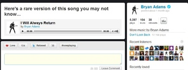
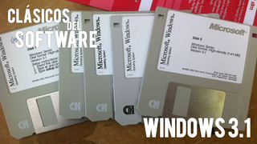
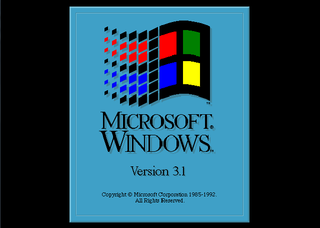
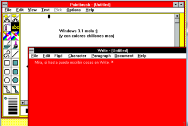
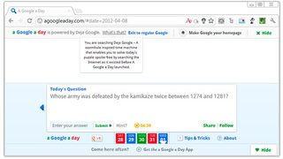
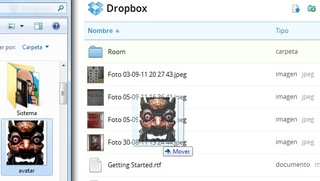
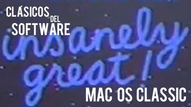
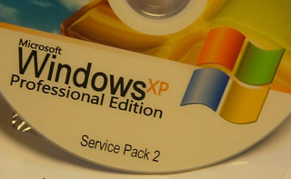

Mon, 09 Apr 2012 07:45:00 GMT
twitmusic, un servicio para reproducir y recomendar canciones a través de Twitter
twitmusic, un servicio para reproducir y recomendar canciones a través de Twitter
Por definición la música es algo social, nos gusta compartirla con amigos, recomendar y descubrir nuevos grupos, canciones y artistas gracias a ellos. Por eso la música siempre se ha llevado bien con las redes sociales. Hoy vamos a ver twitmusic, un servicio para reproducir y recomendar canciones a través de Twitter. Se trata de que aquellos artistas que quieran compartir su música con sus seguidores en Twitter puedan hacerlo de manera sencilla. twitmusic permite subir canciones, fotografías o eventos en los que actuarán los artistas. Nos identificamos con las credenciales de Twitter y podemos hacernos seguidores de nuestros artistas favoritos, marcar una canción como favorita, retwitearla o utilizar el hastag #nowplaying para compartirla con nuestros seguidores o añadir comentarios a las canciones. En teoría el servicio permite, si una canción nos gusta mucho, comprarla en iTunes, pero lo cierto es que no he conseguido encontrar la opción. El servicio está pensado tanto para nuevos artistas como para algunos que ya son conocidos. Para ambos puede ser una manera muy buena de promocionar sus nuevas canciones con sus fans, pero también los conciertos que van a ofrecer, fotos o vídeos que quedarán almacenados en su perfil en la red. De momento cuenta con unos 3.400 artistas que han contribuido con más de 7.500 canciones y tienen más de veinte millones de seguidores. Las perspectivas de crecimiento del servicio son bastante alentadoras. La principal pega que podemos ponerle es la escasez de catálogo, tanto de artistas como en canciones que cada uno de ellos incluye. Es decir, si nos gusta un artista pero no tiene más que una canción en el servicio puede ser algo escaso. Para subsanar esta cuestión twitmusic permite a los usuarios buscar los perfiles de sus artistas favoritos y hacerles una petición para que incluyan su perfil en twitmusic. El servicio tiene su mayor nicho de usuarios en Estados Unidos y Australia. Sus planes van de la mano de los artistas y tienen planeado un servicio de análisis para obtener información útil de las veces que ha sonado una canción, cómo se ha compartido, etc. Para los nuevos grupos o artistas que quieren promocionarse desde luego es una buena oportunidad. Un servicio cómodo para estar en contacto con sus fans y además de compartir con ellos música. Para los ya más famosos o consagrados es una forma de ofrecer algo más que la información del contenido de su desayuno o lo bonita que es la ciudad en la que se encuentran y compartir canciones. Más Información | twitmusic En Genbeta | Mi música es mía: por qué prefiero las canciones en local al streaming
Por definición la música es algo social, nos gusta compartirla con amigos, recomendar y descubrir nuevos grupos, canciones y artistas gracias a ellos. Por eso la música siempre se ha llevado bien con las redes sociales. Hoy vamos a ver twitmusic, un servicio para reproducir y recomendar canciones a través de Twitter.
Se trata de que aquellos artistas que quieran compartir su música con sus seguidores en Twitter puedan hacerlo de manera sencilla. twitmusic permite subir canciones, fotografías o eventos en los que actuarán los artistas. Nos identificamos con las credenciales de Twitter y podemos hacernos seguidores de nuestros artistas favoritos, marcar una canción como favorita, retwitearla o utilizar el hastag #nowplaying para compartirla con nuestros seguidores o añadir comentarios a las canciones.
En teoría el servicio permite, si una canción nos gusta mucho, comprarla en iTunes, pero lo cierto es que no he conseguido encontrar la opción. El servicio está pensado tanto para nuevos artistas como para algunos que ya son conocidos. Para ambos puede ser una manera muy buena de promocionar sus nuevas canciones con sus fans, pero también los conciertos que van a ofrecer, fotos o vídeos que quedarán almacenados en su perfil en la red.

De momento cuenta con unos 3.400 artistas que han contribuido con más de 7.500 canciones y tienen más de veinte millones de seguidores. Las perspectivas de crecimiento del servicio son bastante alentadoras. La principal pega que podemos ponerle es la escasez de catálogo, tanto de artistas como en canciones que cada uno de ellos incluye. Es decir, si nos gusta un artista pero no tiene más que una canción en el servicio puede ser algo escaso.
Para subsanar esta cuestión twitmusic permite a los usuarios buscar los perfiles de sus artistas favoritos y hacerles una petición para que incluyan su perfil en twitmusic. El servicio tiene su mayor nicho de usuarios en Estados Unidos y Australia. Sus planes van de la mano de los artistas y tienen planeado un servicio de análisis para obtener información útil de las veces que ha sonado una canción, cómo se ha compartido, etc.
Para los nuevos grupos o artistas que quieren promocionarse desde luego es una buena oportunidad. Un servicio cómodo para estar en contacto con sus fans y además de compartir con ellos música. Para los ya más famosos o consagrados es una forma de ofrecer algo más que la información del contenido de su desayuno o lo bonita que es la ciudad en la que se encuentran y compartir canciones.
Más Información | twitmusic
En Genbeta | Mi música es mía: por qué prefiero las canciones en local al streaming
Mon, 09 Apr 2012 05:00:00 GMT
Windows 3.1. Clásicos del software (III)
Windows 3.1. Clásicos del software (III)
Vamos a la tercera entrega de nuestra serie de clásicos del software en Genbeta. Hoy le toca el turno a Windows 3.1, el que podríamos considerar el primer Windows de verdad. Windows era el intento de Microsoft de llevar las interfaces gráficas a los ordenadores. La evolución de MS-DOS, el paso de los comandos al ratón y las conocidas ventanas. El primer Windows salió a la venta en 1985.Windows 1 y Windows 2, los predecesores fracasados de Windows 3.1 Antes de Windows 3.1, Microsoft lanzó dos versiones de su interfaz gráfica. La primera fue Windows 1. Por no venir, no venía ni siquiera con iconos para los ejecutables. Eso sí, traía la primera versión del archiconocido Paint, que se ha mantenido en Windows hasta nuestros días. La siguiente versión mayor fue Windows 2, lanzada en 1987, que traía cosas como las ventanas superpuestas y nuevas aplicaciones gráficas como Word y Excel. Ni esta versión ni Windows 1 tuvieron demasiado éxito, y por eso no se suelen tener demasiado en cuenta en la historia de Windows. Windows 3.0 llegó en 1990 con bastantes mejoras respecto a Windows 2. Tampoco tuvo un éxito desmesurado ya que fallaba con demasiada frecuencia, pero sentó las bases de su sucesor Windows 3.1, que sí tendría mucho más éxito. Y llegó Windows 3.1, el primer Windows serio Windows 3.1 fue la primera versión verdaderamente usable de Windows. Traía perlas como el administrador de tareas y de archivos, una interfaz más agradable y más rapidez. Esta versión de Windows necesitaba un procesador 8086/8088 o mejor con una velocidad de al menos 10 Mhz, una RAM de 64 KB y 7 MB de disco duro. Para que os hagáis una idea, con un ordenador actual podríais ejecutar 64 sistemas Windows 3.1 al mismo tiempo. Visto desde lejos, Windows 3.1 no era ninguna maravilla.No tenía barra de tareas, las aplicaciones que abrías se quedaban como iconos en el escritorio, y cambiar entre ellas no era muy cómodo que digamos. Tampoco había un menú de inicio, sólo una ventana con carpetas que contenían las aplicaciones (el famoso Program Manager). Pero claro, eso es visto desde una perspectiva actual. Cuando salió Windows 3.1 era un buen sistema: podías arrastrar y soltar iconos, poner una ventana debajo de otra, tener varias aplicaciones a la vez… Alcanzó una gran popularidad, bastante más que sus predecesores. Microsoft también se encargó de nutrirlo con aplicaciones útiles. Video for Windows (y con él el formato AVI) llegaba en 1992, aprovechando las capacidades multimedia de Windows 3.1. También estaban Word, Excel y el navegador Internet Explorer, que hizo su primera aparición en este sistema. Mi primer contacto con la informática fue con Windows 3.1. Fue primer ordenador que entró en mi casa, un cacharro no muy grande, pero que hacía tanto ruido que parecía que iba a comerse la casa si desviabas la vista. El ordenador vino sin nada, y fue mi padre quien instaló el sistema. Un disco, otro disco, otro… No se me olvidará el “roc-roc” de la disquetera leyendo mientras tragaba cada uno de los siete discos de instalación. Yo no tenía mucha capacidad por aquel entonces para juzgar si era un sistema bueno o no. Yo solo sabía que con eso podía jugar al solitario y al buscaminas (juegos que no fueron modificados hasta Windows XP, si no me equivoco) y a algún otro juego que tuviese por ahí. Aquí es obligatorio mencionar al Prince of Persia, que yo tenía en un disquete de 5¼, y al que imagino que habrá jugado casi todo el mundo. El legado de Windows 3.1 Como no podía ser de otra forma, Windows 3.1 ha dejado una huella importante en las siguientes versiones de Windows. El tipo de letra, por ejemplo, apenas ha sufrido algunos retoques (si hablamos de Windows 7 el cambio es bastante más grande). El reloj de 3.1, que era una aplicación entera, se ha usado en el calendario de la barra de tareas hasta Windows 2000, si mal no recuerdo. En las versiones actuales de Windows, podéis cerrar una aplicación haciendo doble clic en su icono, en la esquina superior izquierda. ¿Sabéis por qué está ahí? Precisamente porque en 3.1, las ventanas se cerraban haciendo doble clic en un botón situado ahí mismo. A Windows 3.1 le costó morir La siguiente versión de Windows, Windows 95, saldría en 1995 sustituyendo a la 3.1. Sin embargo, Microsoft tardó mucho en acabar del todo con esta versión. En 2001 se dejó de dar soporte a Windows 3.1 (y a todas las versiones de Windows de 16 bits). Sin embargo, se siguieron vendiendo licencias en dispositivos incrustados hasta 2008. De hecho, por esas fechas dos operadoras de aviones, Virgin y Qantas, lo usaban como sistema de entretenimiento en los aviones, y estoy seguro de que todavía queda algún cajero o ordenador incrustado por ahí con Windows 3.1. Hasta aquí esta entrega de los clásicos del software en Genbeta. En la siguiente, mi compañero F.Manuel os hablará de las primeras distribuciones Linux. Pero mientras podéis compartir en los comentarios vuestras experiencias con Windows 3.1. Imagen | Benny’s Ling Bling En Genbeta | Especial Clásicos del software

Vamos a la tercera entrega de nuestra serie de clásicos del software en Genbeta. Hoy le toca el turno a Windows 3.1, el que podríamos considerar el primer Windows de verdad.
Windows era el intento de Microsoft de llevar las interfaces gráficas a los ordenadores. La evolución de MS-DOS, el paso de los comandos al ratón y las conocidas ventanas. El primer Windows salió a la venta en 1985.
Windows 1 y Windows 2, los predecesores fracasados de Windows 3.1
Antes de Windows 3.1, Microsoft lanzó dos versiones de su interfaz gráfica. La primera fue Windows 1. Por no venir, no venía ni siquiera con iconos para los ejecutables. Eso sí, traía la primera versión del archiconocido Paint, que se ha mantenido en Windows hasta nuestros días.
La siguiente versión mayor fue Windows 2, lanzada en 1987, que traía cosas como las ventanas superpuestas y nuevas aplicaciones gráficas como Word y Excel. Ni esta versión ni Windows 1 tuvieron demasiado éxito, y por eso no se suelen tener demasiado en cuenta en la historia de Windows.
Windows 3.0 llegó en 1990 con bastantes mejoras respecto a Windows 2. Tampoco tuvo un éxito desmesurado ya que fallaba con demasiada frecuencia, pero sentó las bases de su sucesor Windows 3.1, que sí tendría mucho más éxito.
Y llegó Windows 3.1, el primer Windows serio

Windows 3.1 fue la primera versión verdaderamente usable de Windows. Traía perlas como el administrador de tareas y de archivos, una interfaz más agradable y más rapidez.
Esta versión de Windows necesitaba un procesador 8086/8088 o mejor con una velocidad de al menos 10 Mhz, una RAM de 64 KB y 7 MB de disco duro. Para que os hagáis una idea, con un ordenador actual podríais ejecutar 64 sistemas Windows 3.1 al mismo tiempo.
Visto desde lejos, Windows 3.1 no era ninguna maravilla.No tenía barra de tareas, las aplicaciones que abrías se quedaban como iconos en el escritorio, y cambiar entre ellas no era muy cómodo que digamos. Tampoco había un menú de inicio, sólo una ventana con carpetas que contenían las aplicaciones (el famoso Program Manager).
Pero claro, eso es visto desde una perspectiva actual. Cuando salió Windows 3.1 era un buen sistema: podías arrastrar y soltar iconos, poner una ventana debajo de otra, tener varias aplicaciones a la vez… Alcanzó una gran popularidad, bastante más que sus predecesores.
Microsoft también se encargó de nutrirlo con aplicaciones útiles. Video for Windows (y con él el formato AVI) llegaba en 1992, aprovechando las capacidades multimedia de Windows 3.1. También estaban Word, Excel y el navegador Internet Explorer, que hizo su primera aparición en este sistema.

Mi primer contacto con la informática fue con Windows 3.1. Fue primer ordenador que entró en mi casa, un cacharro no muy grande, pero que hacía tanto ruido que parecía que iba a comerse la casa si desviabas la vista. El ordenador vino sin nada, y fue mi padre quien instaló el sistema. Un disco, otro disco, otro… No se me olvidará el “roc-roc” de la disquetera leyendo mientras tragaba cada uno de los siete discos de instalación.
Yo no tenía mucha capacidad por aquel entonces para juzgar si era un sistema bueno o no. Yo solo sabía que con eso podía jugar al solitario y al buscaminas (juegos que no fueron modificados hasta Windows XP, si no me equivoco) y a algún otro juego que tuviese por ahí. Aquí es obligatorio mencionar al Prince of Persia, que yo tenía en un disquete de 5¼, y al que imagino que habrá jugado casi todo el mundo.
El legado de Windows 3.1
Como no podía ser de otra forma, Windows 3.1 ha dejado una huella importante en las siguientes versiones de Windows. El tipo de letra, por ejemplo, apenas ha sufrido algunos retoques (si hablamos de Windows 7 el cambio es bastante más grande). El reloj de 3.1, que era una aplicación entera, se ha usado en el calendario de la barra de tareas hasta Windows 2000, si mal no recuerdo.
En las versiones actuales de Windows, podéis cerrar una aplicación haciendo doble clic en su icono, en la esquina superior izquierda. ¿Sabéis por qué está ahí? Precisamente porque en 3.1, las ventanas se cerraban haciendo doble clic en un botón situado ahí mismo.
A Windows 3.1 le costó morir
La siguiente versión de Windows, Windows 95, saldría en 1995 sustituyendo a la 3.1. Sin embargo, Microsoft tardó mucho en acabar del todo con esta versión. En 2001 se dejó de dar soporte a Windows 3.1 (y a todas las versiones de Windows de 16 bits). Sin embargo, se siguieron vendiendo licencias en dispositivos incrustados hasta 2008.
De hecho, por esas fechas dos operadoras de aviones, Virgin y Qantas, lo usaban como sistema de entretenimiento en los aviones, y estoy seguro de que todavía queda algún cajero o ordenador incrustado por ahí con Windows 3.1.
Hasta aquí esta entrega de los clásicos del software en Genbeta. En la siguiente, mi compañero F.Manuel os hablará de las primeras distribuciones Linux. Pero mientras podéis compartir en los comentarios vuestras experiencias con Windows 3.1.
Imagen | Benny’s Ling Bling
En Genbeta | Especial Clásicos del software
Sun, 08 Apr 2012 15:47:45 GMT
Seis comandos útiles de Linux que seguramente no conocíais
Seis comandos útiles de Linux que seguramente no conocíais
Una de las herramientas más potentes y útiles que tienen los sistemas operativos son las terminales. Hacemos una pregunta precisa y la máquina nos da la respuesta precisa, haciendo exactamente lo que nosotros buscamos que haga. La cuestión es que es una herramienta tan potente como poco user-friendly, sobre todo para los no iniciados. Desde Genbeta ya os animamos a que perdiérais el miedo a la terminal de Linux con una serie de artículos con la información necesaria para empezar a movernos por ese entorno de caracteres, y con algunas cuestiones más avanzadas. Y hoy lo que yo os traigo son seis comandos realmente útiles y curiosos para utilizar en la terminal de nuestra distribución preferida. Ejecutar el último comando como administrador Pongamos que hemos intentado ejecutar apt-get install sin permisos de administrador en esa máquina. Si es sólo un paquete no hay problema: podemos reescribirlo añadiendo sudo delante, y en paz. Pero si el comando es kilométrico, con chorrocientos paquetes (como el que ejecuto yo siempre que instalo una máquina de Linux, para dejarla lista), puede ser más sencillo simplemente ejecutar lo siguiente: sudo !! Ese comando ejecutará el último comando, pero con permisos de administrador en el sistema. vi: guardar un archivo para el que no tenemos permisos Por seguir con el ejemplo: hemos intentado editar (usando vi, por supuesto) sources.list para añadir algún repositorio pero cuando lo hemos ido a guardar (:w) hemos recordado que no lo abrimos como root. La solución pasa por escribir lo siguiente: :w !sudo tee % Ejecutar el último comando sustituyendo algún trozo de texto Queremos ejecutar un comando kilométrico (varias tuberías de por medio, por ejemplo) y al hacerlo descubrimos, no sin cierta sorpresa, que hemos confundido /home por /hmoe. Tenemos dos opciones: pulsar las flechas para rescatar el último comando del historial y corregirlo manualmente, o simplemente escribir ^hmoe^home en la terminal. Ese comando tiene una limitación: únicamente sustituye la primera ocurrencia del error. Si queremos sustituirlas todas, podemos probar !!:gs/hmoe/home. Vaciar un fichero Este es realmente simple. No necesitamos más que ejecutar > fichero para vaciar al fichero de todo contenido. Lo que hace ese comando es sobreescribir el fichero por la salida del comando escrito a la izquierda del >; como no existe dicho comando, lo sobreescribimos con nada. Obtener nuestra dirección IP pública Hay veces que necesitamos conocer la IP que tenemos de cara a Internet. Si bien hay muchos servicios Web que ofrecen esa información muy simplemente, en ocasiones necesitamos simplemente saber cuál es, incluso para pasársela a otra aplicación. El comando curl ifconfig.me devolverá la IP de la forma más simple: sus cifras separadas por los puntos reglamentarios. Vía | Unixmen En Genbeta | CliCompanion hace más fácil el uso de la terminal de Linux Imagen | Sven
Una de las herramientas más potentes y útiles que tienen los sistemas operativos son las terminales. Hacemos una pregunta precisa y la máquina nos da la respuesta precisa, haciendo exactamente lo que nosotros buscamos que haga. La cuestión es que es una herramienta tan potente como poco user-friendly, sobre todo para los no iniciados.
Desde Genbeta ya os animamos a que perdiérais el miedo a la terminal de Linux con una serie de artículos con la información necesaria para empezar a movernos por ese entorno de caracteres, y con algunas cuestiones más avanzadas. Y hoy lo que yo os traigo son seis comandos realmente útiles y curiosos para utilizar en la terminal de nuestra distribución preferida.
Ejecutar el último comando como administrador
Pongamos que hemos intentado ejecutar apt-get install sin permisos de administrador en esa máquina. Si es sólo un paquete no hay problema: podemos reescribirlo añadiendo sudo delante, y en paz. Pero si el comando es kilométrico, con chorrocientos paquetes (como el que ejecuto yo siempre que instalo una máquina de Linux, para dejarla lista), puede ser más sencillo simplemente ejecutar lo siguiente:
sudo !!
Ese comando ejecutará el último comando, pero con permisos de administrador en el sistema.
vi: guardar un archivo para el que no tenemos permisos
Por seguir con el ejemplo: hemos intentado editar (usando vi, por supuesto) sources.list para añadir algún repositorio pero cuando lo hemos ido a guardar (:w) hemos recordado que no lo abrimos como root. La solución pasa por escribir lo siguiente:
:w !sudo tee %
Ejecutar el último comando sustituyendo algún trozo de texto
Queremos ejecutar un comando kilométrico (varias tuberías de por medio, por ejemplo) y al hacerlo descubrimos, no sin cierta sorpresa, que hemos confundido /home por /hmoe. Tenemos dos opciones: pulsar las flechas para rescatar el último comando del historial y corregirlo manualmente, o simplemente escribir ^hmoe^home en la terminal.
Ese comando tiene una limitación: únicamente sustituye la primera ocurrencia del error. Si queremos sustituirlas todas, podemos probar !!:gs/hmoe/home.
Vaciar un fichero
Este es realmente simple. No necesitamos más que ejecutar > fichero para vaciar al fichero de todo contenido. Lo que hace ese comando es sobreescribir el fichero por la salida del comando escrito a la izquierda del >; como no existe dicho comando, lo sobreescribimos con nada.
Obtener nuestra dirección IP pública
Hay veces que necesitamos conocer la IP que tenemos de cara a Internet. Si bien hay muchos servicios Web que ofrecen esa información muy simplemente, en ocasiones necesitamos simplemente saber cuál es, incluso para pasársela a otra aplicación.
El comando curl ifconfig.me devolverá la IP de la forma más simple: sus cifras separadas por los puntos reglamentarios.
Vía | Unixmen
En Genbeta | CliCompanion hace más fácil el uso de la terminal de Linux
Imagen | Sven
Sun, 08 Apr 2012 07:10:00 GMT
A Google a Day nos propone retos para aprender a buscar
A Google a Day nos propone retos para aprender a buscar
A través de nuestra conexión a internet somos capaces de acceder a una cantidad de información tan ingente que no seríamos capaces de procesarla en una vida (ni en unas cuantas). En muchas ocasiones necesitamos realizar pequeñas investigaciones, y el problema no radica en la calidad de la documentación, sino en saber encontrarla. Así es, hoy en día ser capaces de realizar buenas búsquedas en webs y buscadores debería ser una cualidad que todos nosotros tendríamos que entrenar. Seguro que la mayoría de nosotros hemos querido arrancarnos los ojos al observar una búsqueda demasiado escueta; así que para evitar eso, Google ha lanzado una serie de retos diarios llamados A Google A Day. Te proponen una pregunta que requiere cierta investigación y si no encuentras la solución te dan pista para encontrarla. Sí, ya lo sé, ¿por qué no buscas en Google a gente que ya lo haya solucionado? Pues porque no puedes. Para ello han sacado a relucir su Deja Google, que realiza búsquedas sobre el estado del buscador en un día en concreto. Es hora de aprender a buscar, ¡no hagas trampas! Enlace | A Google a Day

A través de nuestra conexión a internet somos capaces de acceder a una cantidad de información tan ingente que no seríamos capaces de procesarla en una vida (ni en unas cuantas). En muchas ocasiones necesitamos realizar pequeñas investigaciones, y el problema no radica en la calidad de la documentación, sino en saber encontrarla.
Así es, hoy en día ser capaces de realizar buenas búsquedas en webs y buscadores debería ser una cualidad que todos nosotros tendríamos que entrenar. Seguro que la mayoría de nosotros hemos querido arrancarnos los ojos al observar una búsqueda demasiado escueta; así que para evitar eso, Google ha lanzado una serie de retos diarios llamados A Google A Day.
Te proponen una pregunta que requiere cierta investigación y si no encuentras la solución te dan pista para encontrarla. Sí, ya lo sé, ¿por qué no buscas en Google a gente que ya lo haya solucionado? Pues porque no puedes. Para ello han sacado a relucir su Deja Google, que realiza búsquedas sobre el estado del buscador en un día en concreto. Es hora de aprender a buscar, ¡no hagas trampas!
Enlace | A Google a Day
Sat, 07 Apr 2012 19:38:33 GMT
Internet is a series of blogs (CXXVIII)
Internet is a series of blogs (CXXVIII)
Sabemos que son fechas singulares y que muchos están de vacaciones o simplemente prefieren, por unos días de procesiones, hacer otras cosas a navegar por los tubos de Internet. Pero en Genbeta estamos, como siempre, todo lo al pie del cañón que podemos (palabra), para así ofreceros lo mejor de la actualidad en nuestro sector. Contando con que muchos de vosotros habréis pasado estas semanas descansando o visitando playas, montañas o, en definitiva, sitios bonitos (yo he estado en Cáceres, ciudad que a estas alturas conozco demasiado bien) esta noche, como casi todos los sábados, toca hacer nuestro tradicional recopilatorio con lo mejor o al menos lo más interesante de la blogosfera hispana. Comenzamos con Internet is a series of blogs.
¿Sabemos para lo que es Internet a estas alturas de la película? Uno de los grandes de la industria es YouPorn y estos días ha compartido sus impresionantes cifras (entre otras, el tamaño de las películas que almacenan, la cantidad de tráfico diario…). Lo vemos en Denken Über. Esta semana os preguntamos aplicaciones que os son útiles cuando nos vamos de viaje. Y para los que no conozcan ningún nombre concreto recomiendo una lista con cinco aplicaciones interesantes para cuando tenemos que movernos, vía Incubaweb. Que el software libre está en alza en según qué sectores es un hecho. Y muchas empresas recurren a él para ahorrar costes, por razones filosóficas o por todo a la vez. Este tema lo tratan en En Naranja, donde reflexionan acerca de si el software libre es clave en el éxito de las empresas de hoy. La Wikipedia sabemos que basa su contenido en el conocimiento de los usuarios que deciden contribuir con la comunidad. La cuestión es que para que esto funcione mejor es necesaria variedad en el perfil de los contribuyentes, y se ve que hay un estudio no oficial que dice que esto no se cumple: lo tratan en Error500. Términos y Condiciones de los servicios Web en los que nos registramos: estoy seguro de que el 99% no los leemos, bien por pereza, bien por no entenderlos. Y el lanzamiento de Instagram para Android ha propiciado que se miren con lupa los cambios que han realizado los desarrolladores en sus ToS. En el blog Términos y Condiciones hablan en cristiano de la política de privacidad y de las condiciones del servicio de Instagram; merece la pena echarle un vistazo. Ya para terminar, una nota musical. Siempre nos gusta ver máquinas interpretando nuestras canciones preferidas, y hoy tocará una banda de robots la canción Come Together, de los Beatles. Lo vimos en geek’s rooM. Sin más, os dejo con vuestras respectivas fiestas, no sin antes recordaros que podéis recomendarnos enlaces interesantes a través de nuestro formulario de contacto o de nuestra cuenta en Twitter. Pasad una buena semana. Imagen | Karl Baron
Sabemos que son fechas singulares y que muchos están de vacaciones o simplemente prefieren, por unos días de procesiones, hacer otras cosas a navegar por los tubos de Internet. Pero en Genbeta estamos, como siempre, todo lo al pie del cañón que podemos (palabra), para así ofreceros lo mejor de la actualidad en nuestro sector.
Contando con que muchos de vosotros habréis pasado estas semanas descansando o visitando playas, montañas o, en definitiva, sitios bonitos (yo he estado en Cáceres, ciudad que a estas alturas conozco demasiado bien) esta noche, como casi todos los sábados, toca hacer nuestro tradicional recopilatorio con lo mejor o al menos lo más interesante de la blogosfera hispana. Comenzamos con Internet is a series of blogs.
- ¿Sabemos para lo que es Internet a estas alturas de la película? Uno de los grandes de la industria es YouPorn y estos días ha compartido sus impresionantes cifras (entre otras, el tamaño de las películas que almacenan, la cantidad de tráfico diario…). Lo vemos en Denken Über.
- Esta semana os preguntamos aplicaciones que os son útiles cuando nos vamos de viaje. Y para los que no conozcan ningún nombre concreto recomiendo una lista con cinco aplicaciones interesantes para cuando tenemos que movernos, vía Incubaweb.
- Que el software libre está en alza en según qué sectores es un hecho. Y muchas empresas recurren a él para ahorrar costes, por razones filosóficas o por todo a la vez. Este tema lo tratan en En Naranja, donde reflexionan acerca de si el software libre es clave en el éxito de las empresas de hoy.
- La Wikipedia sabemos que basa su contenido en el conocimiento de los usuarios que deciden contribuir con la comunidad. La cuestión es que para que esto funcione mejor es necesaria variedad en el perfil de los contribuyentes, y se ve que hay un estudio no oficial que dice que esto no se cumple: lo tratan en Error500.
- Términos y Condiciones de los servicios Web en los que nos registramos: estoy seguro de que el 99% no los leemos, bien por pereza, bien por no entenderlos. Y el lanzamiento de Instagram para Android ha propiciado que se miren con lupa los cambios que han realizado los desarrolladores en sus ToS. En el blog Términos y Condiciones hablan en cristiano de la política de privacidad y de las condiciones del servicio de Instagram; merece la pena echarle un vistazo.
- Ya para terminar, una nota musical. Siempre nos gusta ver máquinas interpretando nuestras canciones preferidas, y hoy tocará una banda de robots la canción Come Together, de los Beatles. Lo vimos en geek’s rooM.
Sin más, os dejo con vuestras respectivas fiestas, no sin antes recordaros que podéis recomendarnos enlaces interesantes a través de nuestro formulario de contacto o de nuestra cuenta en Twitter. Pasad una buena semana.
Imagen | Karl Baron
Sat, 07 Apr 2012 08:39:37 GMT
Seis servicios para crear tarjetas de visita aprovechando las redes sociales
Seis servicios para crear tarjetas de visita aprovechando las redes sociales
Cierto que las tarjetas de visita convencionales están en desuso, pero aún así en muchos ámbitos se siguen utilizando. De todas formas no tenemos por qué utilizar las clásicas tarjetas de visita aburridas y hoy os vamos a proponer seis servicios para crear tarjetas de visita aprovechando las redes sociales. Si tenemos imágenes que nos gustan, momentos que hemos captado que nos parecen especiales por qué no aprovecharlos como fondo para nuestra tarjeta de visita. Desde luego dicen mucho más de nosotros que cualquier fondo prediseñado que tengan otras tarjetas y seguro que el formato no deja indiferente a nadie. Claro que tenemos que elegir con cuidado. No vale cualquier imagen. Tarjetas tradicionales con diseños sociales En este caso vamos a hablar de continuar con el formato más tradicional, ya sea web o físico de la tarjeta, pero aprovechando para ello en el diseño las imágenes que tenemos en las redes sociales.
Cardflick, es un servicio web, que también está disponible para iPhone y en beta para Android. Podemos subir nuestras propias imágenes o las de Instagram o Facebook. Dispone de una amplia gama de plantillas y los resultados son bastante buenos. El diseño desde luego no pasa indiferente. Una vez creada la tarjeta podemos compartirla a través del correo electrónico, redes sociales, etc. Una opción interesante para la aplicación móvil es poder compartirla con aquellos que están próximos a nosotros y tienen la aplicación instalada.
Facebook Cards, es la apuesta de uno de los líderes en el sector de las tarjetas a nivel internacional, como moo. Para obtenerlas sólo tenemos que identificarnos con nuestra cuenta de Facebook. Utilizará las últimas 50 fotos de portada que hayamos tenido para crear la tarjeta, junto con nuestra imgen de perfil. En el reverso podemos añadir toda la información adicional que decidamos. El resultado puede ser bastante bueno. Una de las cosas que no podremos modificar de la información de nuestra tarjeta será el perfil de Facebook. De todas formas este servicio también nos permite crear tarjetas con imágenes que tengamos de Flickr o Picasa. Una pena que no integren Instagram. Tarjetas Virtuales para incluir nuestros perfiles sociales En este caso vamos a ver las posibilidades que tenemos de crear una tarjeta de visita 2.0, o lo que es lo mismo, una página de contacto, donde podemos aglutinar todos nuestros datos en redes sociales y el resto de formas de contacto que utilizamos.
SocialDex cumple estas premisas que son comunes a estos servicios. Destaca por la cantidad de perfiles que podemos incorporar de redes sociales, desde Facebook a Spotify, pasando por Instagram o Pinterest. Pocas se echan en falta. Después sólo nos queda conectar con los amigos que tengamos en dichas redes, puesto que esta tarjeta de visita sólo tiene sentido si se difunde. Podemos decidir que información mostramos de forma pública y cuál queda sólo para nuestros contactos. Por lo demás debe mejorar su diseño de tarjetas, tanto desde la web como el móvil. Tiene margen, todavía está en beta.
About.me nos permite tener una página de perfil en la que podemos añadir una imagen de fondo, enlaces a las redes sociales en las que estamos presentes así como una pequeña biografía. Además dispone de una aplicación para iPhone, que nos permitirá tener nuestro perfil social para compartir de forma sencilla y rápida. También identifica si alguien cerca a nosotros tiene la aplicación instalada para intercambiar los contactos. Lo mejor es la forma de presentar el perfil, en una ventana emergente con pestañas para nuestros perfiles sociales lo que nos permite ver todos los de un contacto de forma rápida y cómoda.
Identyme destaca por la cantidad de información que nos permite agregar a la página de perfil. Nos permite crear un pequeño porfolio personal, lo que en muchos sectores se agradece mucho. Como pero le podríamos poner que le faltan plantillas, pero alguna de ellas como la de mostrar nuestro perfil emulando un iPad son bastante buenas. También podemos integrarlo con nuestra cuenta de Analitycs. En su contra diremos que la forma de añadir redes sociales no es lo más cómoda que hemos encontrado, así como algunos fallos a la hora de importar la vCard con los datos de contacto. Junto con About.me es uno de los que más me ha gustado. Bonus Track: los códigos QR No es que utilice los perfiles sociales de forma concreta pero merece la pena destacarlo por la popularidad que están alcanzando los códigos QR, sobre todo con el aumento de teléfonos móviles. QRCards nos permite crear un código QR con toda la información de contacto que deseemos, desde nuestros perfiles en las redes sociales, a nuestro perfil de skype o por supuesto teléfonos o correo electrónico. Una vez completados todos los datos se genera el código QR que incorporamos a cualquiera de las opciones anteriores, utilizamos como imagen de perfil en las redes sociales, etc. Es una opción muy práctica, porque de esta manera el código QR que tenemos en una tarjeta física siempre contendrá información actualizada, aunque en la tarjeta por cualquier cuestión se haya quedado algo desfasada. Con todas las opciones que os hemos presentado tenemos una buena selección de aplicaciones y recursos para utilizar y ser más visibles y fáciles de contactar en la web. A veces, se hace demasiado pesado ir añadiendo cuando damos una biografía o reseña en la web todas las redes sociales en las que estamos presentes, que cada día son más. Para estos momentos las tarjetas virtuales que os hemos presentado son perfectas. En las tradicionales, las tarjetas físicas que entregamos lo cierto es que la cantidad de diseños posibles para destacar son casi infinitos. En Tecnología Pyme | Cinco alternativas para gestionar las tarjetas de visita desde el móvil Imagen | erenemre
Cierto que las tarjetas de visita convencionales están en desuso, pero aún así en muchos ámbitos se siguen utilizando. De todas formas no tenemos por qué utilizar las clásicas tarjetas de visita aburridas y hoy os vamos a proponer seis servicios para crear tarjetas de visita aprovechando las redes sociales.
Si tenemos imágenes que nos gustan, momentos que hemos captado que nos parecen especiales por qué no aprovecharlos como fondo para nuestra tarjeta de visita. Desde luego dicen mucho más de nosotros que cualquier fondo prediseñado que tengan otras tarjetas y seguro que el formato no deja indiferente a nadie. Claro que tenemos que elegir con cuidado. No vale cualquier imagen.
Tarjetas tradicionales con diseños sociales
En este caso vamos a hablar de continuar con el formato más tradicional, ya sea web o físico de la tarjeta, pero aprovechando para ello en el diseño las imágenes que tenemos en las redes sociales.
- Cardflick, es un servicio web, que también está disponible para iPhone y en beta para Android. Podemos subir nuestras propias imágenes o las de Instagram o Facebook. Dispone de una amplia gama de plantillas y los resultados son bastante buenos. El diseño desde luego no pasa indiferente. Una vez creada la tarjeta podemos compartirla a través del correo electrónico, redes sociales, etc. Una opción interesante para la aplicación móvil es poder compartirla con aquellos que están próximos a nosotros y tienen la aplicación instalada.
-
Facebook Cards, es la apuesta de uno de los líderes en el sector de las tarjetas a nivel internacional, como moo. Para obtenerlas sólo tenemos que identificarnos con nuestra cuenta de Facebook. Utilizará las últimas 50 fotos de portada que hayamos tenido para crear la tarjeta, junto con nuestra imgen de perfil. En el reverso podemos añadir toda la información adicional que decidamos. El resultado puede ser bastante bueno. Una de las cosas que no podremos modificar de la información de nuestra tarjeta será el perfil de Facebook. De todas formas este servicio también nos permite crear tarjetas con imágenes que tengamos de Flickr o Picasa. Una pena que no integren Instagram.
Tarjetas Virtuales para incluir nuestros perfiles sociales
En este caso vamos a ver las posibilidades que tenemos de crear una tarjeta de visita 2.0, o lo que es lo mismo, una página de contacto, donde podemos aglutinar todos nuestros datos en redes sociales y el resto de formas de contacto que utilizamos.
- SocialDex cumple estas premisas que son comunes a estos servicios. Destaca por la cantidad de perfiles que podemos incorporar de redes sociales, desde Facebook a Spotify, pasando por Instagram o Pinterest. Pocas se echan en falta. Después sólo nos queda conectar con los amigos que tengamos en dichas redes, puesto que esta tarjeta de visita sólo tiene sentido si se difunde. Podemos decidir que información mostramos de forma pública y cuál queda sólo para nuestros contactos. Por lo demás debe mejorar su diseño de tarjetas, tanto desde la web como el móvil. Tiene margen, todavía está en beta.
- About.me nos permite tener una página de perfil en la que podemos añadir una imagen de fondo, enlaces a las redes sociales en las que estamos presentes así como una pequeña biografía. Además dispone de una aplicación para iPhone, que nos permitirá tener nuestro perfil social para compartir de forma sencilla y rápida. También identifica si alguien cerca a nosotros tiene la aplicación instalada para intercambiar los contactos. Lo mejor es la forma de presentar el perfil, en una ventana emergente con pestañas para nuestros perfiles sociales lo que nos permite ver todos los de un contacto de forma rápida y cómoda.
- Identyme destaca por la cantidad de información que nos permite agregar a la página de perfil. Nos permite crear un pequeño porfolio personal, lo que en muchos sectores se agradece mucho. Como pero le podríamos poner que le faltan plantillas, pero alguna de ellas como la de mostrar nuestro perfil emulando un iPad son bastante buenas. También podemos integrarlo con nuestra cuenta de Analitycs. En su contra diremos que la forma de añadir redes sociales no es lo más cómoda que hemos encontrado, así como algunos fallos a la hora de importar la vCard con los datos de contacto. Junto con About.me es uno de los que más me ha gustado.
Bonus Track: los códigos QR
No es que utilice los perfiles sociales de forma concreta pero merece la pena destacarlo por la popularidad que están alcanzando los códigos QR, sobre todo con el aumento de teléfonos móviles.
QRCards nos permite crear un código QR con toda la información de contacto que deseemos, desde nuestros perfiles en las redes sociales, a nuestro perfil de skype o por supuesto teléfonos o correo electrónico.
Una vez completados todos los datos se genera el código QR que incorporamos a cualquiera de las opciones anteriores, utilizamos como imagen de perfil en las redes sociales, etc. Es una opción muy práctica, porque de esta manera el código QR que tenemos en una tarjeta física siempre contendrá información actualizada, aunque en la tarjeta por cualquier cuestión se haya quedado algo desfasada.
Con todas las opciones que os hemos presentado tenemos una buena selección de aplicaciones y recursos para utilizar y ser más visibles y fáciles de contactar en la web. A veces, se hace demasiado pesado ir añadiendo cuando damos una biografía o reseña en la web todas las redes sociales en las que estamos presentes, que cada día son más. Para estos momentos las tarjetas virtuales que os hemos presentado son perfectas. En las tradicionales, las tarjetas físicas que entregamos lo cierto es que la cantidad de diseños posibles para destacar son casi infinitos.
En Tecnología Pyme | Cinco alternativas para gestionar las tarjetas de visita desde el móvil
Imagen | erenemre
Fri, 06 Apr 2012 11:57:41 GMT
Los dos caminos de Google para el futuro: lo social y la información
Los dos caminos de Google para el futuro: lo social y la información
En enero de 2011, Google anunciaba que Larry Page volvería a ser CEO en lugar de Eric Schmidt. Ha pasado ya más de un año desde entonces, un año en el que Google ha dado un cambio muy importante. El cambio ha sido Google+. Google lanzó su nueva red social en junio del año pasado, y desde entonces se ha centrado en tratar de impulsarla entre la gente, con poco éxito para ser un producto de Google.Google ya no es la empresa del buscador, es la empresa de la red social Y no es porque lo diga yo. Lo dicen ellos. En la carta a los inversores, Larry Page explica cómo quieren mejorar la búsqueda: Google+ nos ayuda a resolver este problema [de la búsqueda sin personalizar] porque permite a Gooogle entender a la gente y sus conexiones. Antes, el padre de los productos de Google era la búsqueda. ¿Adivináis que era lo primero que promocionaba Google de su recién creado Gmail, allá por el 2004? Búsqueda. ¿Y de Google Maps? Exacto. También la búsqueda. Todos los productos de Google giraban en mayor o menor medida alrededor de buscar cosas (y de encontrarlas). Ya no. Ahora, los productos de Google giran en torno a lo social, incluido su propio motor de búsqueda. Y esto no tendría por qué ser un problema, si no fuese porque Google se está equivocando en la forma de conseguirlo. Google está metiendo Google+ con calzador en sus productos con resultados no muy buenos. En Gmail, tengo un enorme contador rojo con las notificaciones de Google+ que no hace más que distraerme. A mi Google Reader le quitaron la capacidad de compartir posts con un atajo de teclado sólo por cambiarlo a compartir con Google+. La página de búsqueda tiene cada vez menos espacio para los resultados y más para lo relacionado con la red social. Y lo peor es que cada vez esto aporta menos. Si Google+ fuese una red con mucha actividad, pues bueno. Pero es que no lo es. No me sirve de nada tanto Google+ por todas partes porque no me aporta nada. Basar todos sus productos en algo que va camino del fracaso no es una buena idea. Es difícil tirar a la basura todo el gran trabajo que han conseguido hasta ahora, pero podrían llegar a hacerlo si siguen así. Espero que se den cuenta y no pongan todos sus huevos en la cesta de Google+, porque podría ser el mayor error que han cometido en toda su historia. El “otro” camino de Google: recopilar toda la información Las gafas de Google, información rápida a más no poder. En su carta a los inversores, Larry Page también habla de cosas que no son Google+. Lo que más me llamó la atención fue esta cita: Truly great search is all about turning your needs into actions in the blink of an eye. Este sí es el Google de verdad. El que te da la información que buscas rápido y sin complicarte. Proyectos como el de las gafas de realidad aumentada, la integración del tiempo, cartelera e información similar directamente en los resultados de búsqueda, Priority Inbox… Son la muestra de que Google sigue preocupándose por recopilar información y entenderla. El negocio de Google es la información. Entenderla y presentárnosla de la forma más fácil, rápida y precisa posible. Lo social nunca ha sido lo suyo. Está bien que tengan una red social, pero que no sea lo principal. Ya lo hacen otros mejor que Google, que aprovechen y saquen más jugo de lo que ya está hecho. Imagen | Brionv | Engadget
En enero de 2011, Google anunciaba que Larry Page volvería a ser CEO en lugar de Eric Schmidt. Ha pasado ya más de un año desde entonces, un año en el que Google ha dado un cambio muy importante.
El cambio ha sido Google+. Google lanzó su nueva red social en junio del año pasado, y desde entonces se ha centrado en tratar de impulsarla entre la gente, con poco éxito para ser un producto de Google.
Google ya no es la empresa del buscador, es la empresa de la red social

Y no es porque lo diga yo. Lo dicen ellos. En la carta a los inversores, Larry Page explica cómo quieren mejorar la búsqueda:
Google+ nos ayuda a resolver este problema [de la búsqueda sin personalizar] porque permite a Gooogle entender a la gente y sus conexiones.
Antes, el padre de los productos de Google era la búsqueda. ¿Adivináis que era lo primero que promocionaba Google de su recién creado Gmail, allá por el 2004? Búsqueda. ¿Y de Google Maps? Exacto. También la búsqueda. Todos los productos de Google giraban en mayor o menor medida alrededor de buscar cosas (y de encontrarlas).
Ya no. Ahora, los productos de Google giran en torno a lo social, incluido su propio motor de búsqueda. Y esto no tendría por qué ser un problema, si no fuese porque Google se está equivocando en la forma de conseguirlo.
Google está metiendo Google+ con calzador en sus productos con resultados no muy buenos. En Gmail, tengo un enorme contador rojo con las notificaciones de Google+ que no hace más que distraerme. A mi Google Reader le quitaron la capacidad de compartir posts con un atajo de teclado sólo por cambiarlo a compartir con Google+. La página de búsqueda tiene cada vez menos espacio para los resultados y más para lo relacionado con la red social.
Y lo peor es que cada vez esto aporta menos. Si Google+ fuese una red con mucha actividad, pues bueno. Pero es que no lo es. No me sirve de nada tanto Google+ por todas partes porque no me aporta nada.
Basar todos sus productos en algo que va camino del fracaso no es una buena idea. Es difícil tirar a la basura todo el gran trabajo que han conseguido hasta ahora, pero podrían llegar a hacerlo si siguen así. Espero que se den cuenta y no pongan todos sus huevos en la cesta de Google+, porque podría ser el mayor error que han cometido en toda su historia.
El “otro” camino de Google: recopilar toda la información
Las gafas de Google, información rápida a más no poder.
En su carta a los inversores, Larry Page también habla de cosas que no son Google+. Lo que más me llamó la atención fue esta cita:
Truly great search is all about turning your needs into actions in the blink of an eye.
Este sí es el Google de verdad. El que te da la información que buscas rápido y sin complicarte. Proyectos como el de las gafas de realidad aumentada, la integración del tiempo, cartelera e información similar directamente en los resultados de búsqueda, Priority Inbox… Son la muestra de que Google sigue preocupándose por recopilar información y entenderla.
El negocio de Google es la información. Entenderla y presentárnosla de la forma más fácil, rápida y precisa posible. Lo social nunca ha sido lo suyo. Está bien que tengan una red social, pero que no sea lo principal. Ya lo hacen otros mejor que Google, que aprovechen y saquen más jugo de lo que ya está hecho.
Imagen | Brionv | Engadget
Fri, 06 Apr 2012 06:36:30 GMT
Dropbox facilita la subida de archivos sólo con arrastrar y soltar en su versión web
Dropbox facilita la subida de archivos sólo con arrastrar y soltar en su versión web
Dropbox lleva unos cuantos días bastante activo, primero con la noticia de que ofrecerá a partir de ahora 500 MB en su política de referidos y ayer Dropbox anunció que añade soporte para añadir archivos sólo con arrastrar y soltar en su versión web. Esta característica está soportada en Firefox, Chrome y Safari. Internet Explorer y Opera se quedan fuera. Una pena, sobre todo por el primero puesto que si algún sentido tiene esta característica es cuando usamos Dropbox en equipos públicos, es decir, el ordenador de la universidad, una biblioteca o el centro de trabajo, y queremos añadir archivos a nuestro disco duro virtual. Y en estos equipos no siempre está instalado un navegador distinto a Internet Explorer. No se si los rumores sobre el disco duro virtual de Google le están haciendo reaccionar o por lo menos algo le inquietan, pero lo cierto es que parece que últimamente están más activos, mejorando algunas de sus funcionalidades, sobre todo en la versión web y permitiendo que a través de su política de referidos los usuarios puedan aumentar sus cuentas gratuitas de 2 GB que se están quedando cortas. Dropbox no es sólo espacio online sino que se integra con un gran ecosistema de aplicaciones y por eso tiene todavía una gran ventaja sobre otros servicios que ofrecen un mayor espacio de almacenamiento online y buenos clientes de escritorio para la sincronización de los mismos pero que no se integran con la cantidad de servicios que si lo hace Dropbox. Más Información | Blog Dropbox En Genbeta | Dropbox anuncia inversiones de Bono y The Edge, componentes de U2

Dropbox lleva unos cuantos días bastante activo, primero con la noticia de que ofrecerá a partir de ahora 500 MB en su política de referidos y ayer Dropbox anunció que añade soporte para añadir archivos sólo con arrastrar y soltar en su versión web. Esta característica está soportada en Firefox, Chrome y Safari.
Internet Explorer y Opera se quedan fuera. Una pena, sobre todo por el primero puesto que si algún sentido tiene esta característica es cuando usamos Dropbox en equipos públicos, es decir, el ordenador de la universidad, una biblioteca o el centro de trabajo, y queremos añadir archivos a nuestro disco duro virtual. Y en estos equipos no siempre está instalado un navegador distinto a Internet Explorer.
No se si los rumores sobre el disco duro virtual de Google le están haciendo reaccionar o por lo menos algo le inquietan, pero lo cierto es que parece que últimamente están más activos, mejorando algunas de sus funcionalidades, sobre todo en la versión web y permitiendo que a través de su política de referidos los usuarios puedan aumentar sus cuentas gratuitas de 2 GB que se están quedando cortas.
Dropbox no es sólo espacio online sino que se integra con un gran ecosistema de aplicaciones y por eso tiene todavía una gran ventaja sobre otros servicios que ofrecen un mayor espacio de almacenamiento online y buenos clientes de escritorio para la sincronización de los mismos pero que no se integran con la cantidad de servicios que si lo hace Dropbox.
Más Información | Blog Dropbox
En Genbeta | Dropbox anuncia inversiones de Bono y The Edge, componentes de U2
Thu, 05 Apr 2012 18:32:17 GMT
Amazon lanza Ebooks Kindle en español llega al mercado americano
Amazon lanza Ebooks Kindle en español llega al mercado americano
Tras dar el paso hace un tiempo con los libros en lengua inglesa, ahora Amazon lanza Ebooks Kindle en español, una nueva sección donde se podrá acceder al catálogo en lengua castellana. Además para los clientes de habla hispana de Estados Unidos estarán disponibles páginas de ayuda soporte telefónico y por correo en español. De esta manera ahora es posible comprar libros de lengua española desde Amazon.com La tienda contará más de 30.000 títulos en total, incluyendo la obras exclusivas dentro de la política de Amazon para atraer a los lectores. La tienda también incluye libros de ganadores del Premio Nobel o títulos muy populares en ventas de autores como Julia Navarro, Carlos Ruiz Zafón 0 Isabel Allende además de más de mil clásicos gratis en español Además eBooks Kindle en Español dispondrá también de una cuidada selección de autores mexicanos como José Emilio Pacheco, Carlos Monsiváis y Sergio Pitol, puesto apuestan por un mercado que tenga raíces en este país. Pero también a la actualidad de los países de habla hispana puesto que incluirán recopilaciones de artículos de “El Pais“y tabmién artículos exclusivas de periodistas mexicanos escribiendo sobre asuntos de actualidad. También se ofrecerán suscripciones a otros catorce periódicos latinoamericanos. Por último también ofrecerán una selección de libros de inglés traducidos al español, éxitos de ventas como Los juegos del hambre o la biografía de Steve Jobs, así como de otros populares autores de best-sellers como Stephen King. Desde luego es una buena noticia para el mundo de la cultura en lengua hispana, para llegar de forma más sencilla a un sector, el hispano, que cada vez tiene más importancia en los Estados Unidos Más Información | Amazon En Genbeta | Amazon.es abrirá su tienda de libros electrónicos en España este jueves 1 de diciembre
Tras dar el paso hace un tiempo con los libros en lengua inglesa, ahora Amazon lanza Ebooks Kindle en español, una nueva sección donde se podrá acceder al catálogo en lengua castellana. Además para los clientes de habla hispana de Estados Unidos estarán disponibles páginas de ayuda soporte telefónico y por correo en español. De esta manera ahora es posible comprar libros de lengua española desde Amazon.com
La tienda contará más de 30.000 títulos en total, incluyendo la obras exclusivas dentro de la política de Amazon para atraer a los lectores. La tienda también incluye libros de ganadores del Premio Nobel o títulos muy populares en ventas de autores como Julia Navarro, Carlos Ruiz Zafón 0 Isabel Allende además de más de mil clásicos gratis en español
Además eBooks Kindle en Español dispondrá también de una cuidada selección de autores mexicanos como José Emilio Pacheco, Carlos Monsiváis y Sergio Pitol, puesto apuestan por un mercado que tenga raíces en este país. Pero también a la actualidad de los países de habla hispana puesto que incluirán recopilaciones de artículos de “El Pais“y tabmién artículos exclusivas de periodistas mexicanos escribiendo sobre asuntos de actualidad. También se ofrecerán suscripciones a otros catorce periódicos latinoamericanos.
Por último también ofrecerán una selección de libros de inglés traducidos al español, éxitos de ventas como Los juegos del hambre o la biografía de Steve Jobs, así como de otros populares autores de best-sellers como Stephen King. Desde luego es una buena noticia para el mundo de la cultura en lengua hispana, para llegar de forma más sencilla a un sector, el hispano, que cada vez tiene más importancia en los Estados Unidos
Más Información | Amazon
En Genbeta | Amazon.es abrirá su tienda de libros electrónicos en España este jueves 1 de diciembre
Thu, 05 Apr 2012 10:33:47 GMT
Gmail para Android actualizado con características de Ice Cream Sandwich
Gmail para Android actualizado con características de Ice Cream Sandwich
La aplicación Gmail para Android ha sido actualizada con cambios de cierto calado. Aunque las novedades más significativas las van a poder disfrutar los usuarios con terminales equipados con Ice Cream Sandwich y Honeycomb, en especial las tabletas, la actualización comprende desde Android 1.6 en adelante. El nuevo Gmail trae la experiencia de usuario de Android 4.0 a los de Honeycomb, ya que la actualización de Gmail para Android es la misma (4.0.5), para las dos versiones del sistema operativo. En ambos casos, podemos movernos con el dedo entre las conversaciones antiguas o más recientes, configurar notificaciones personalizadas, sincronizar correos de los últimos 30 días o acceder a las etiquetas más recientes con sólo tocar el nombre de la cuenta. Para Froyo y Gingerbread la aplicación se actualiza a la versión 2.3.6, con una mejora general de rendimiento. Gmail para Android añade una nueva API de etiquetas para desarrolladores. La aplicación está disponible para descargar desde Google Play. Vía | Xataka Android Web | Descarga
La aplicación Gmail para Android ha sido actualizada con cambios de cierto calado. Aunque las novedades más significativas las van a poder disfrutar los usuarios con terminales equipados con Ice Cream Sandwich y Honeycomb, en especial las tabletas, la actualización comprende desde Android 1.6 en adelante.
El nuevo Gmail trae la experiencia de usuario de Android 4.0 a los de Honeycomb, ya que la actualización de Gmail para Android es la misma (4.0.5), para las dos versiones del sistema operativo. En ambos casos, podemos movernos con el dedo entre las conversaciones antiguas o más recientes, configurar notificaciones personalizadas, sincronizar correos de los últimos 30 días o acceder a las etiquetas más recientes con sólo tocar el nombre de la cuenta.
Para Froyo y Gingerbread la aplicación se actualiza a la versión 2.3.6, con una mejora general de rendimiento. Gmail para Android añade una nueva API de etiquetas para desarrolladores. La aplicación está disponible para descargar desde Google Play.
Vía | Xataka Android
Web | Descarga
Thu, 05 Apr 2012 03:25:00 GMT
Mac OS Classic. Clásicos del software (II)
Mac OS Classic. Clásicos del software (II)
Seguimos con nuestro especial de clásicos del software en Genbeta con Mac OS Classic, englobando a las primeras generaciones del sistema Mac OS que Apple desarrolló y comercializó en sus primeros Mac. No fue el primero que lo llevaba, pero sí fue el primer sistema operativo que distribuyó “en masa” una interfaz gráfica alejándose de las consolas de comando como las de MS-DOS. Originalmente se basó en el sistema operativo del ordenador Lisa, uno de los precursores del Mac bautizado con el nombre de una de las hijas de Steve Jobs, y heredó propiedades de la primera interfaz gráfica del Xerox Alto gracias a que en Xerox desecharon la idea del ratón y el cursor y a que en Apple contratasen a sus artífices. Apple anunció el lanzamiento del primer Macintosh por todo lo alto, con uno de los anuncios más famosos de la historia emitido una sola vez en la Superbowl. Mac OS, 1984 dejó de ser 1984 Unos tres años antes de que este anuncio se emitiera en la Superbowl, un joven Steve Jobs asumía el control absoluto del desarrollo del primer Macintosh. Andy Hertzfeld se encargaba de la mayor parte del código fuente, que ocuparía una ROM de 64 Kb. Steve mantenía atormentado a todo el equipo, ordenando pulir detalles con una precisión enfermiza. Un pixel mal puesto significaba el apocalipsis para el cofundador de Apple. Su nombre no fue Mac OS originalmente pero fue evolucionando desde Mac System Software hacia System Software, System y finalmente Mac OS a partir de su versión 7.6. A finales de enero de 1984 Steve Jobs presentaba las capacidades del primer Mac OS rodeado de aplausos y vítores de los asistentes y la prensa. Todo cambiaba con un ordenador que era capaz de hablar: Lo que importa es la base: la evolución de Mac OS La interfaz original de Mac OS, que podéis ver aquí arriba, era en blanco y negro. Su resolución era de 512×342 píxeles (el icono de una aplicación en el nuevo iPad tiene más resolución a día de hoy), pero era más que suficiente para ejecutar sólo una aplicación al mismo tiempo y mostrar de forma gráfica todos los elementos y archivos del sistema y del usuario. Lo que más recuerdan los veteranos, como siempre, son los detalles cuidados al máximo para que Mac OS fuese lo más intuitivo posible. A nivel personal recuerdo sorprenderme de usar un Mac clásico con una pantalla “muy pequeña”, y quedar más sorprendido que con las pantallas de 14 y 15 pulgadas de los ordenadores con Windows de entonces. Las versiones 1,2,3 y 4 de Mac OS se centraron en mejoras técnicas, era una época donde Apple llevaba algo de retraso respecto a la competencia. No fue hasta la quinta versión de Mac OS que el sistema no fue capaz de ejecutar varias aplicaciones al mismo tiempo (irónico, ha pasado más o menos lo mismo que en iOS con su multitarea), pero muchos recuerdan más el lanzamiento de la sexta versión por ser una actualización que mejoraba la estabilidad y el rendimiento del sistema. Mac OS 7, 8 y 9: los primeros “Mac OS” La séptima versión de Mac OS trajo consigo un rediseño más profundo. Seguimos en blanco y negro y con los mismos iconos y menús, pero las capacidades de los ordenadores eran ya mucho mayores que los Mac originales. La versión 7.6 fue la primera con la que ya vino el nombre de Mac OS, y siendo capaz de funcionar a todo color se convirtió en uno de los primeros competidores serios de un Windows que a esas alturas ya estaba conquistando el mercado. Fue el primer Mac OS que usaba con cierta regularidad gracias al Mac Performa de unos amigos, y estamos hablando de cuando aún no llegaba a mirar por encima de las mesas. Con esa versión Apple aguantó sus peores años, tras despedir a Steve Jobs y empezar a perder el rumbo con su gama de dispositivos y software. Una prueba: este vídeo donde Apple comparaba Mac OS con Windows 95 bastante a la desesperada: Pero en 1997 Jobs regresó a Apple justo después de que Mac OS 8 saliese al mercado, estrenando el sistema de archivos HFS+ que aún usan todos los Mac actuales. Y no pasaron ni dos años para ver Mac OS X 9, la última versión de la generación clásica de Mac OS. La novena versión de Mac OS estaba optimizada para trabajar con conexiones a la red y navegar por internet, presumía de un buscador llamado Sherlock (el precursor del actual Spotlight, podríamos decir)… es un sistema que incluso hoy en día aún podemos ver funcionando en algunos Mac que se han quedado obsoletos. Pero Steve tenía otro plan, Mac OS X, que hizo que él mismo enterrara simbólicamente a Mac OS 9 dos años más tarde en una keynote: Le echaremos un vistazo a las versiones más tempranas de Mac OS X en una próxima edición de nuestro especial de clásicos del software. Imagen | Rudolf Schuba

Seguimos con nuestro especial de clásicos del software en Genbeta con Mac OS Classic, englobando a las primeras generaciones del sistema Mac OS que Apple desarrolló y comercializó en sus primeros Mac. No fue el primero que lo llevaba, pero sí fue el primer sistema operativo que distribuyó “en masa” una interfaz gráfica alejándose de las consolas de comando como las de MS-DOS.
Originalmente se basó en el sistema operativo del ordenador Lisa, uno de los precursores del Mac bautizado con el nombre de una de las hijas de Steve Jobs, y heredó propiedades de la primera interfaz gráfica del Xerox Alto gracias a que en Xerox desecharon la idea del ratón y el cursor y a que en Apple contratasen a sus artífices. Apple anunció el lanzamiento del primer Macintosh por todo lo alto, con uno de los anuncios más famosos de la historia emitido una sola vez en la Superbowl.
Mac OS, 1984 dejó de ser 1984
Unos tres años antes de que este anuncio se emitiera en la Superbowl, un joven Steve Jobs asumía el control absoluto del desarrollo del primer Macintosh. Andy Hertzfeld se encargaba de la mayor parte del código fuente, que ocuparía una ROM de 64 Kb. Steve mantenía atormentado a todo el equipo, ordenando pulir detalles con una precisión enfermiza. Un pixel mal puesto significaba el apocalipsis para el cofundador de Apple.
Su nombre no fue Mac OS originalmente pero fue evolucionando desde Mac System Software hacia System Software, System y finalmente Mac OS a partir de su versión 7.6. A finales de enero de 1984 Steve Jobs presentaba las capacidades del primer Mac OS rodeado de aplausos y vítores de los asistentes y la prensa. Todo cambiaba con un ordenador que era capaz de hablar:
Lo que importa es la base: la evolución de Mac OS
La interfaz original de Mac OS, que podéis ver aquí arriba, era en blanco y negro. Su resolución era de 512×342 píxeles (el icono de una aplicación en el nuevo iPad tiene más resolución a día de hoy), pero era más que suficiente para ejecutar sólo una aplicación al mismo tiempo y mostrar de forma gráfica todos los elementos y archivos del sistema y del usuario. Lo que más recuerdan los veteranos, como siempre, son los detalles cuidados al máximo para que Mac OS fuese lo más intuitivo posible.
A nivel personal recuerdo sorprenderme de usar un Mac clásico con una pantalla “muy pequeña”, y quedar más sorprendido que con las pantallas de 14 y 15 pulgadas de los ordenadores con Windows de entonces. Las versiones 1,2,3 y 4 de Mac OS se centraron en mejoras técnicas, era una época donde Apple llevaba algo de retraso respecto a la competencia.
No fue hasta la quinta versión de Mac OS que el sistema no fue capaz de ejecutar varias aplicaciones al mismo tiempo (irónico, ha pasado más o menos lo mismo que en iOS con su multitarea), pero muchos recuerdan más el lanzamiento de la sexta versión por ser una actualización que mejoraba la estabilidad y el rendimiento del sistema.
Mac OS 7, 8 y 9: los primeros “Mac OS”
La séptima versión de Mac OS trajo consigo un rediseño más profundo. Seguimos en blanco y negro y con los mismos iconos y menús, pero las capacidades de los ordenadores eran ya mucho mayores que los Mac originales. La versión 7.6 fue la primera con la que ya vino el nombre de Mac OS, y siendo capaz de funcionar a todo color se convirtió en uno de los primeros competidores serios de un Windows que a esas alturas ya estaba conquistando el mercado. Fue el primer Mac OS que usaba con cierta regularidad gracias al Mac Performa de unos amigos, y estamos hablando de cuando aún no llegaba a mirar por encima de las mesas.
Con esa versión Apple aguantó sus peores años, tras despedir a Steve Jobs y empezar a perder el rumbo con su gama de dispositivos y software. Una prueba: este vídeo donde Apple comparaba Mac OS con Windows 95 bastante a la desesperada:
Pero en 1997 Jobs regresó a Apple justo después de que Mac OS 8 saliese al mercado,
estrenando el sistema de archivos HFS+ que aún usan todos los Mac actuales. Y no pasaron ni dos años para ver Mac OS X 9, la última versión de la generación clásica de Mac OS.
La novena versión de Mac OS estaba optimizada para trabajar con conexiones a la red y navegar por internet, presumía de un buscador llamado Sherlock (el precursor del actual Spotlight, podríamos decir)… es un sistema que incluso hoy en día aún podemos ver funcionando en algunos Mac que se han quedado obsoletos. Pero Steve tenía otro plan, Mac OS X, que hizo que él mismo enterrara simbólicamente a Mac OS 9 dos años más tarde en una keynote:
Le echaremos un vistazo a las versiones más tempranas de Mac OS X en una próxima edición de nuestro especial de clásicos del software.
Imagen | Rudolf Schuba
Wed, 04 Apr 2012 14:45:00 GMT
Flickr estrena nuevo editor de fotografías con tecnología de Aviary
Flickr estrena nuevo editor de fotografías con tecnología de Aviary
El próximo cierre de Picnik ha provocado que Flickr se actualice para seguir proporcionando a sus usuarios una aplicación de edición de las fotografías alojadas en su servicio. Esa actualización va a tardar muy muy poco en llegar, creedme. Y estaba cantado que la tecnología de Aviary iba a ser la elegida para pasar a formar parte del considerado por muchos mejor servicio de alojamiento de fotografías. Flickr no es pionero ni tiene exclusividad alguna en este sentido: Aviary proporciona la misma tecnología a usuarios de Facebook. Prometen una integración de Aviary en Flickr semejante a la que tenía Flickr, y es interesante comentar que el nuevo editor funcionará en tabletas como el iPad. El nuevo editor empezará a aparecer en las cuentas de los usuarios mañana mismo y no debería tardar demasiado en haberse propagado a través de todas ellas. Vía | VentureBeat
El próximo cierre de Picnik ha provocado que Flickr se actualice para seguir proporcionando a sus usuarios una aplicación de edición de las fotografías alojadas en su servicio. Esa actualización va a tardar muy muy poco en llegar, creedme.
Y estaba cantado que la tecnología de Aviary iba a ser la elegida para pasar a formar parte del considerado por muchos mejor servicio de alojamiento de fotografías. Flickr no es pionero ni tiene exclusividad alguna en este sentido: Aviary proporciona la misma tecnología a usuarios de Facebook.
Prometen una integración de Aviary en Flickr semejante a la que tenía Flickr, y es interesante comentar que el nuevo editor funcionará en tabletas como el iPad. El nuevo editor empezará a aparecer en las cuentas de los usuarios mañana mismo y no debería tardar demasiado en haberse propagado a través de todas ellas.
Vía | VentureBeat
Wed, 04 Apr 2012 13:40:54 GMT
SkyCMD, interfaz web de línea de comandos para Skydrive
SkyCMD, interfaz web de línea de comandos para Skydrive
Por la cercanía en las fechas puede parecer una broma del April Fools Day (y de hecho lo fue), pero puedo aseguraros que esto además que una broma es un juguete de lo más llamativo e interesante, sobre todo para el desarrollador. Su nombre es SkyCMD y no es otra cosa que una interfaz de línea de comandos para manejar Skydrive. Los comandos disponibles son un subconjunto bastante reducido de los que podemos imaginar y los que podemos utilizar también en MS-DOS y el símbolo de sistema de Windows, añadiendo los de login y logout, para abrir y cerrar nuestra sesión con nuestro Windows Live ID. Utilizarlo es muy sencillo si estamos familiarizados con este tipo de interfaces, aunque es importante comentar que la disposición del teclado que se utiliza es la norteamericana (con las comillas, por ejemplo, donde nosotros tenemos la Ñ). Lo único que echo de menos es la posibilidad de subir archivos (y ni siquiera, porque quizá seleccionar el archivo sería demasiado complejo como para ser utilizable). No necesitamos absolutamente nada especial para trastear con esta interfaz construida usando la API de Skydrive, tan sólo nuestro Windows Live ID. Y reconozco que utilidad tiene poca, pero como juguete y como proyecto de investigación de su creador no tiene precio. Más información | Inside Windows Live Sitio oficial | SkyCMD
Por la cercanía en las fechas puede parecer una broma del April Fools Day (y de hecho lo fue), pero puedo aseguraros que esto además que una broma es un juguete de lo más llamativo e interesante, sobre todo para el desarrollador. Su nombre es SkyCMD y no es otra cosa que una interfaz de línea de comandos para manejar Skydrive.
Los comandos disponibles son un subconjunto bastante reducido de los que podemos imaginar y los que podemos utilizar también en MS-DOS y el símbolo de sistema de Windows, añadiendo los de login y logout, para abrir y cerrar nuestra sesión con nuestro Windows Live ID.
Utilizarlo es muy sencillo si estamos familiarizados con este tipo de interfaces, aunque es importante comentar que la disposición del teclado que se utiliza es la norteamericana (con las comillas, por ejemplo, donde nosotros tenemos la Ñ). Lo único que echo de menos es la posibilidad de subir archivos (y ni siquiera, porque quizá seleccionar el archivo sería demasiado complejo como para ser utilizable).
No necesitamos absolutamente nada especial para trastear con esta interfaz construida usando la API de Skydrive, tan sólo nuestro Windows Live ID. Y reconozco que utilidad tiene poca, pero como juguete y como proyecto de investigación de su creador no tiene precio.
Más información | Inside Windows Live
Sitio oficial | SkyCMD
Mon, 09 Apr 2012 06:20:44 GMT
¿Qué programa conoces tan a fondo como para considerarte experto? La pregunta de la semana
¿Qué programa conoces tan a fondo como para considerarte experto? La pregunta de la semana
Hay programas que manejamos con mucha frecuencia. De ellos conocemos hasta la última característica que incorporan y muchos trucos para aumentar nuestra productividad con ellos. Sobre este particular queremos formular la pregunta de la semana: ¿Qué programa conoces tan a fondo como para considerarte experto? Hablamos de esas piezas de software sin secretos para nosotros. Empleamos atajos de teclado, entendemos y aplicamos todas sus funciones y exprimimos al máximo, tanto en la vida profesional como en la personal. La pregunta de la semana pasada Es el momento de ver los resultados de la pregunta formulada la semana anterior: ¿Qué aplicaciones son imprescindibles en móviles y tablets estas vacaciones? La mejor respuesta, valorada así por la comunidad de usuarios de Genbeta ha sido la de Manu Mateos, que opina así: Sin duda una de GPS que no requiera conexión a Internet, sobre todo si vamos al extranjero. Alguna guía de viajes tipo minube, una buena aplicación de cámara para inmortalizar nuestros recuerdos. Por último, os recuerdo que los comentarios en el artículo están cerrados y podéis expresar vuestra opinión en Genbeta respuestas. La semana que viene ofreceremos el resultado de la pregunta de hoy. Gracias por vuestra participación. Enlace a la pregunta | ¿Qué programa conoces tan a fondo como para considerarte experto?

Hay programas que manejamos con mucha frecuencia. De ellos conocemos hasta la última característica que incorporan y muchos trucos para aumentar nuestra productividad con ellos. Sobre este particular queremos formular la pregunta de la semana:
¿Qué programa conoces tan a fondo como para considerarte experto?
Hablamos de esas piezas de software sin secretos para nosotros. Empleamos atajos de teclado, entendemos y aplicamos todas sus funciones y exprimimos al máximo, tanto en la vida profesional como en la personal.
La pregunta de la semana pasada
Es el momento de ver los resultados de la pregunta formulada la semana anterior: ¿Qué aplicaciones son imprescindibles en móviles y tablets estas vacaciones? La mejor respuesta, valorada así por la comunidad de usuarios de Genbeta ha sido la de Manu Mateos, que opina así:
Sin duda una de GPS que no requiera conexión a Internet, sobre todo si vamos al extranjero. Alguna guía de viajes tipo minube, una buena aplicación de cámara para inmortalizar nuestros recuerdos.
Por último, os recuerdo que los comentarios en el artículo están cerrados y podéis expresar vuestra opinión en Genbeta respuestas. La semana que viene ofreceremos el resultado de la pregunta de hoy. Gracias por vuestra participación.
Enlace a la pregunta | ¿Qué programa conoces tan a fondo como para considerarte experto?
Sun, 08 Apr 2012 20:12:00 GMT
Las reglas para ser un programador Zen y las bromas del April Fool's Day sobre programación, repaso por Genbeta Dev
Las reglas para ser un programador Zen y las bromas del April Fool's Day sobre programación, repaso por Genbeta Dev
Llega nuestra dosis semanal sobre programación. Os contamos los posts más interesantes de Genbeta Dev, el blog hermano de Genbeta orientado a los desarrolladores de software y a todos los lectores interesados en la creación de aplicaciones con todo tipo de tecnologías. Comenzamos hablando de una serie de reglas para convertirnos en un programador Zen. Aunque algunas suenen demasiado radicales hay que saber aplicarlas en nuestro trabajo diario: focalizando tareas y liberando nuestra mente. Como sabéis el pasado 1 de abril fue el April Fool’s Day, no podíamos dejar pasar la oportunidad de hacer un recopilatorio con algunas de las bromas sobre programación que más gracia nos han hecho. Entre ellas destacamos el Spooning, la nueva técnica para hacer pair programming. Continuamos con nuestros posts prácticos de cómo combinar Bitbucket y Git para realizar auto deployment de nuestro código. También le echamos un vistazo a la herramienta de Google Translator Toolkit para internacionalizar automáticamente nuestras aplicaciones. Coger vuestro ordenador y poneos a probar con nosotros. En la pregunta de esta semana en Genbeta Dev indagamos un poco sobre la calidad laboral de los compañeros y compañeras de nuestro sector, así que queremos conocer qué es lo que te motiva para levantarte de la cama mañana para ir a trabajar. Entre las herramientas curiosas que nos hemos encontrado esta semana navegado entre repositorios de código como GitHub y Google Code, nos topamos con Google Code Line que nos permite utilizar algunos de los servicios de Google usando una línea de comandos. Enlace | Genbeta Dev
Llega nuestra dosis semanal sobre programación. Os contamos los posts más interesantes de Genbeta Dev, el blog hermano de Genbeta orientado a los desarrolladores de software y a todos los lectores interesados en la creación de aplicaciones con todo tipo de tecnologías. Comenzamos hablando de una serie de reglas para convertirnos en un programador Zen. Aunque algunas suenen demasiado radicales hay que saber aplicarlas en nuestro trabajo diario: focalizando tareas y liberando nuestra mente.
Como sabéis el pasado 1 de abril fue el April Fool’s Day, no podíamos dejar pasar la oportunidad de hacer un recopilatorio con algunas de las bromas sobre programación que más gracia nos han hecho. Entre ellas destacamos el Spooning, la nueva técnica para hacer pair programming.
Continuamos con nuestros posts prácticos de cómo combinar Bitbucket y Git para realizar auto deployment de nuestro código. También le echamos un vistazo a la herramienta de Google Translator Toolkit para internacionalizar automáticamente nuestras aplicaciones. Coger vuestro ordenador y poneos a probar con nosotros.
En la pregunta de esta semana en Genbeta Dev indagamos un poco sobre la calidad laboral de los compañeros y compañeras de nuestro sector, así que queremos conocer qué es lo que te motiva para levantarte de la cama mañana para ir a trabajar.
Entre las herramientas curiosas que nos hemos encontrado esta semana navegado entre repositorios de código como GitHub y Google Code, nos topamos con Google Code Line que nos permite utilizar algunos de los servicios de Google usando una línea de comandos.
Enlace | Genbeta Dev
Sun, 08 Apr 2012 08:35:06 GMT
OpenStreetMaps vs. Google Maps, quién gana y quién pierde con los últimos movimientos en torno a los mapas
OpenStreetMaps vs. Google Maps, quién gana y quién pierde con los últimos movimientos en torno a los mapas
Si hace poco más de un mes preguntábamos cual era el servicio de mapas dominante y más utilizado por la mayoría de usuarios y servicios la respuesta era unánime: Google Maps. Pero tras los últimos movimientos en torno a los mapas, con tres grandes servicios o empresas, Foursquare, Apple y la Wikipedia, apostando por OpenStreetMaps, el panorama ha cambiado. Por eso queremos ver quién gana y quién pierde con los últimos movimientos entorno a los mapas. Google Maps sigue dominando el panorama con gran ventaja. Porque de momento no parece que las cuotas por el momento cambien. Hace falta un poco de tiempo para reflejar este movimiento. Y sobre todo alguna empresa que se sume de forma decidida a este proyecto. El aval de Foursquare sin duda hará decidirse a muchas. OpenStreetMaps, la plataforma libre y colaborativa Para resumir y simplificar podríamos decir que OpenStreetMaps es al mundo de los mapas lo que la Wikipedia al mundo de la enciclopedia. Se trata de una plataforma libre y colaborativa, donde el trabajo conjunto de los editores va diseñando los mapas, introduciendo los cambios, o simplemente completando zonas vacías, etc. Este modelo tiene un problema en su planteamiento. En las zonas con alta densidad de población los cambios se reflejan de forma muy rápida, incluso más que el propio Google. La respuesta de los usuarios es más ágil. Por contra en zonas con baja densidad de población la información puede estar mucho más incompleta. Depende en gran medida de la respuesta de los usuarios. Nos encontramos con zonas donde se han introducido hasta nos caminos vecinales, con un nivel de detalle excelentes y por contra otras con vacíos. Estos vacíos pueden cubrirse con al ayuda de Microsoft y Bing. El uso de las imágenes satélites de Bing para trazar los planos puede ser de gran ayuda. Claro que para eso los mapas de Bing tienen que mejorar, puesto que dependiendo de la zona tampoco es que sean la solución. Sin embargo es otra empresa que aporta su granito de arena al proyecto. Google Maps, algo más que un mapa Pero en la que hay que empezar a pagar. Poco. Sigue siendo gratuito por debajo de 25.000 peticiones a sus servidores. A partir de aquí toca aflojar la mosca, a razón de cuatro dólares por cada 1.000 peticiones adicionales. ¿Cuánto supone esto para Foursquare? ¿Y para Apple? Parece que suficiente para que uno haya decidido cambiar a Foursquare y otro haya comenzado por utilizarlo para iPhoto, quizás como prueba piloto a la espera de desarrollar sus propios mapas. Sin embargo Google Maps son mucho más que mapas. Para las empresas se han convertido en un “must”, un sitio en el que deben estar registrados, para lo cual facilita mucho la labor a las mismas para incluir todo tipo de información. Incluso promocionarse en Google Maps o Google Places para aparecer destacados en búsquedas que se realicen por la zona. Incluso mostrando el interior de los pequeños negocios de barrio. Una buena forma de conseguir los ingresos para hacer rentable el proyecto. Si a esto se sumamos Street View, sin duda encajan todas las piezas en el puzzle. Y ello a pesar de que no esté tan actualizado como a muchos nos gustaría, como podéis ver en la imagen precedente de hace cuatro años. Aun así, hoy por hoy, Google Maps es más completo, sobre todo en determinadas zonas, que OpenStreetMaps. Toda esta información adicional acaba por beneficiar al usuario, que al final utiliza un mapa para ir a un sitio concreto. Los usuarios saldrán ganando, nadie pierde Creo que aunque Google pierda algo de cuota de mercado, porque los usuarios de Foursquare, o los de iPhoto, tendrán que notarse en sus estadísticas, como se van notando en las de OpenStreetMaps, no le hará daño de forma significativa. Otra cosa sería que Apple diera un paso decidido e incorporara OpenStreetMapas como su servicio de mapas por defecto. Esto ya podría suponer un bocado a la cuota de usuarios más jugoso. Para los usuarios es una buena noticia saber que si por cualquier motivo, o por cualquier tema de privacidad con el que no estemos de acuerdo dejamos de usar Google Maps, tenemos una alternativa de calidad disponible. La mejora de StreetMaps debe venir por la capacidad que tenga de absorción de nuevos colaboradores en el mundo de las empresas. Si todos asumen las reglas y aportan la financiación adecuada seguro que el servicio mejorará en poco tiempo. A día de hoy en los mapas, el callejero, tiene poco que envidiar a Google Maps. El resto ya es otra cuestión. Pero es un buen comienzo. En Genbeta | Otro más que cae: Wikipedia deja Google Maps y se pasa a OpenStreetMap en sus aplicaciones móviles
Si hace poco más de un mes preguntábamos cual era el servicio de mapas dominante y más utilizado por la mayoría de usuarios y servicios la respuesta era unánime: Google Maps. Pero tras los últimos movimientos en torno a los mapas, con tres grandes servicios o empresas, Foursquare, Apple y la Wikipedia, apostando por OpenStreetMaps, el panorama ha cambiado. Por eso queremos ver quién gana y quién pierde con los últimos movimientos entorno a los mapas.
Google Maps sigue dominando el panorama con gran ventaja. Porque de momento no parece que las cuotas por el momento cambien. Hace falta un poco de tiempo para reflejar este movimiento. Y sobre todo alguna empresa que se sume de forma decidida a este proyecto. El aval de Foursquare sin duda hará decidirse a muchas.
OpenStreetMaps, la plataforma libre y colaborativa
Para resumir y simplificar podríamos decir que OpenStreetMaps es al mundo de los mapas lo que la Wikipedia al mundo de la enciclopedia. Se trata de una
plataforma libre y colaborativa, donde el trabajo conjunto de los editores va diseñando los mapas, introduciendo los cambios, o simplemente completando zonas vacías, etc.
Este modelo tiene un problema en su planteamiento. En las zonas con alta densidad de población los cambios se reflejan de forma muy rápida, incluso más que el propio Google. La respuesta de los usuarios es más ágil. Por contra en zonas con baja densidad de población la información puede estar mucho más incompleta. Depende en gran medida de la respuesta de los usuarios. Nos encontramos con zonas donde se han introducido hasta nos caminos vecinales, con un nivel de detalle excelentes y por contra otras con vacíos.
Estos vacíos pueden cubrirse con al ayuda de Microsoft y Bing. El uso de las imágenes satélites de Bing para trazar los planos puede ser de gran ayuda. Claro que para eso los mapas de Bing tienen que mejorar, puesto que dependiendo de la zona tampoco es que sean la solución. Sin embargo es otra empresa que aporta su granito de arena al proyecto.
Google Maps, algo más que un mapa
Pero en la que hay que empezar a pagar. Poco. Sigue siendo
gratuito por debajo de 25.000 peticiones a sus servidores. A partir de aquí toca aflojar la mosca, a razón de cuatro dólares por cada 1.000 peticiones adicionales. ¿Cuánto supone esto para Foursquare? ¿Y para Apple? Parece que suficiente para que uno haya decidido cambiar a Foursquare y otro haya comenzado por utilizarlo para iPhoto, quizás como prueba piloto a la espera de desarrollar sus propios mapas.
Sin embargo Google Maps son mucho más que mapas. Para las empresas se han convertido en un “must”, un sitio en el que deben estar registrados, para lo cual facilita mucho la labor a las mismas para incluir todo tipo de información. Incluso promocionarse en Google Maps o Google Places para aparecer destacados en búsquedas que se realicen por la zona. Incluso mostrando el interior de los pequeños negocios de barrio. Una buena forma de conseguir los ingresos para hacer rentable el proyecto.
Si a esto se sumamos Street View, sin duda encajan todas las piezas en el puzzle. Y ello a pesar de que no esté tan actualizado como a muchos nos gustaría, como podéis ver en la imagen precedente de hace cuatro años. Aun así, hoy por hoy, Google Maps es más completo, sobre todo en determinadas zonas, que OpenStreetMaps. Toda esta información adicional acaba por beneficiar al usuario, que al final utiliza un mapa para ir a un sitio concreto.
Los usuarios saldrán ganando, nadie pierde
Creo que aunque
Google pierda algo de cuota de mercado, porque los usuarios de Foursquare, o los de iPhoto, tendrán que notarse en sus estadísticas, como se van notando en las de OpenStreetMaps, no le hará daño de forma significativa. Otra cosa sería que Apple diera un paso decidido e incorporara OpenStreetMapas como su servicio de mapas por defecto. Esto ya podría suponer un bocado a la cuota de usuarios más jugoso.
Para los usuarios es una buena noticia saber que si por cualquier motivo, o por cualquier tema de privacidad con el que no estemos de acuerdo dejamos de usar Google Maps, tenemos una alternativa de calidad disponible. La mejora de StreetMaps debe venir por la capacidad que tenga de absorción de nuevos colaboradores en el mundo de las empresas.
Si todos asumen las reglas y aportan la financiación adecuada seguro que el servicio mejorará en poco tiempo. A día de hoy en los mapas, el callejero, tiene poco que envidiar a Google Maps. El resto ya es otra cuestión. Pero es un buen comienzo.
En Genbeta | Otro más que cae: Wikipedia deja Google Maps y se pasa a OpenStreetMap en sus aplicaciones móviles
Sun, 08 Apr 2012 04:00:33 GMT
La imagen de la semana: dos años para el fin de Windows XP
La imagen de la semana: dos años para el fin de Windows XP
Dentro de dos años, el 8 de abril de 2014, finalizará el ciclo de soporte extendido de Windows XP. La coincidencia de fecha con el día de hoy para el fin de XP, sería motivo suficiente para dedicarle al sistema operativo la imagen de la semana, pero hay más razones para rendir homenaje a XP. Después de aproximadamente once años y medio desde su lanzamiento, Windows XP sigue siendo el sistema operativo más utilizado (fuente Netmarketshare), con casi un 47% de cuota de mercado. Todo un éxito para la criatura de Microsoft. Windows XP ha recibido todo tipo de críticas, que quedan eclipsadas en mi opinión por los resultados. Será curioso ver dentro de dos años la cuota de mercado que aún tendrá XP cuando finalice el soporte oficial. Seguro que será superado por Windows 7, y puede que sólo por él… ¡Larga vida al rey! Imagen | Priceminister En Tecnología Pyme | Quedan dos años para el final de Windows XP

Dentro de dos años, el 8 de abril de 2014, finalizará el ciclo de soporte extendido de Windows XP. La coincidencia de fecha con el día de hoy para el fin de XP, sería motivo suficiente para dedicarle al sistema operativo la imagen de la semana, pero hay más razones para rendir homenaje a XP.
Después de aproximadamente once años y medio desde su lanzamiento, Windows XP sigue siendo el sistema operativo más utilizado (fuente Netmarketshare), con casi un 47% de cuota de mercado. Todo un éxito para la criatura de Microsoft.
Windows XP ha recibido todo tipo de críticas, que quedan eclipsadas en mi opinión por los resultados. Será curioso ver dentro de dos años la cuota de mercado que aún tendrá XP cuando finalice el soporte oficial. Seguro que será superado por Windows 7, y puede que sólo por él… ¡Larga vida al rey!
Imagen | Priceminister
En Tecnología Pyme | Quedan dos años para el final de Windows XP
Sat, 07 Apr 2012 09:45:00 GMT
TweetBot incluye sincronización a través de iCloud en su versión 2.2
TweetBot incluye sincronización a través de iCloud en su versión 2.2
Durante las últimas semanas ha habido unas cuantas actualizaciones para uno de los clientes de Twitter predilectos para los usuarios de iOS. Se trata de TweetBot, y aunque algunos quieran verlo como pagar 2,39 euros por un icono que parece una muñeca hinchable (ahora ya lo has visto), es difícil desprenderse de él una vez que lo has probado. En la versión 2.2 de TweetBot, los chicos de Tapbots han incluido la posibilidad de sincronizar tu cuenta de Twitter a través de iCloud. Y es que sigue siendo un fastidio marcar como leídos mensajes que ya habías leído por la mañana, pero mucho peor era tener que replicar los filtros. Ahora, si has iniciado sesión en iCloud todo irá sobre ruedas. Ahora que ya tenemos iPad y iPhone sincronizados (la versión de iPad desde principios de año) sólo nos queda por pedir un último deseo, ¿para cuándo una versión para escritorio, o web, de TweetBot? La gente de Tapbots ha hecho un gran producto, pero siempre se puede pedir más. En Applesfera | Tweetbot se actualiza y nos trae sincronización de sus aplicaciones con iCloud En Genbeta | TweetBot no es ‘otro cliente más’ de Twitter
Durante las últimas semanas ha habido unas cuantas actualizaciones para uno de los clientes de Twitter predilectos para los usuarios de iOS. Se trata de TweetBot, y aunque algunos quieran verlo como pagar 2,39 euros por un icono que parece una muñeca hinchable (ahora ya lo has visto), es difícil desprenderse de él una vez que lo has probado.
En la versión 2.2 de TweetBot, los chicos de Tapbots han incluido la posibilidad de sincronizar tu cuenta de Twitter a través de iCloud. Y es que sigue siendo un fastidio marcar como leídos mensajes que ya habías leído por la mañana, pero mucho peor era tener que replicar los filtros. Ahora, si has iniciado sesión en iCloud todo irá sobre ruedas.
Ahora que ya tenemos iPad y iPhone sincronizados (la versión de iPad desde principios de año) sólo nos queda por pedir un último deseo, ¿para cuándo una versión para escritorio, o web, de TweetBot? La gente de Tapbots ha hecho un gran producto, pero siempre se puede pedir más.
En Applesfera | Tweetbot se actualiza y nos trae sincronización de sus aplicaciones con iCloud
En Genbeta | TweetBot no es ‘otro cliente más’ de Twitter
Fri, 06 Apr 2012 18:08:29 GMT
El caso #PrayForPortugal y el exitazo de Instagram en Android, repaso por Genbeta Social Media
El caso #PrayForPortugal y el exitazo de Instagram en Android, repaso por Genbeta Social Media
A pesar de estar en plenas vacaciones de Semana Santa, aquí estamos como cada viernes para traeros nuestro resumen semanal de Genbeta Social Media con la actualidad y los artículos más interesantes sobre medios y redes sociales. Comenzamos nuestra particular “procesión” a continuación:
La noticia más importante de los últimos días la ha protagonizado Instagram y su, por fin, lanzamiento para Android. La expectación era absoluta y prueba de ello es que en menos un día se lograron más de un millón de descargas.
Los que hayáis estado pendientes estos días de Twitter habréis visto la que se montó el lunes por la noche en esta red social con el #PrayForPortugal. Repasamos en detalle lo que ocurrió y cómo éste es un claro ejemplo de que no debería creerse todo lo que leemos por ahí.
Seguimos con Twitter, en este caso para hablar del cada vez mayor spam que sufre esta plataforma. Para evitarlo, la compañía se ha puesto manos a la obra y ha demandado a tres aplicaciones y dos individuos que facilitaban los automatismos y la creación de bots. ¿Sentará ejemplo esta decisión?
Esta semana hemos visto cómo TweetDeck reconocía un importante fallo de seguridad que proporcionaba a algunos usuarios acceso total a cientos de cuentas ajenas. El servicio estuvo offline durante unas horas mientras investigaban el problema, que fue posteriormente arreglado.
También tenemos un par de noticias bastante positivas para el Timeline de Facebook: el anuncio del crecimiento del tráfico de Digg y la integración total de Tumblr en el nuevo open graph.
Terminamos repasando la columna semanal del siempre genial Eduardo Prádanos. ¿Leemos lo que tuiteamos antes de publicarlo? Que cada uno saque sus propias conclusiones. Enlace | Genbeta Social Media
A pesar de estar en plenas vacaciones de Semana Santa, aquí estamos como cada viernes para traeros nuestro resumen semanal de Genbeta Social Media con la actualidad y los artículos más interesantes sobre medios y redes sociales. Comenzamos nuestra particular “procesión” a continuación:
- La noticia más importante de los últimos días la ha protagonizado Instagram y su, por fin, lanzamiento para Android. La expectación era absoluta y prueba de ello es que en menos un día se lograron más de un millón de descargas.
- Los que hayáis estado pendientes estos días de Twitter habréis visto la que se montó el lunes por la noche en esta red social con el #PrayForPortugal. Repasamos en detalle lo que ocurrió y cómo éste es un claro ejemplo de que no debería creerse todo lo que leemos por ahí.
- Seguimos con Twitter, en este caso para hablar del cada vez mayor spam que sufre esta plataforma. Para evitarlo, la compañía se ha puesto manos a la obra y ha demandado a tres aplicaciones y dos individuos que facilitaban los automatismos y la creación de bots. ¿Sentará ejemplo esta decisión?
- Esta semana hemos visto cómo TweetDeck reconocía un importante fallo de seguridad que proporcionaba a algunos usuarios acceso total a cientos de cuentas ajenas. El servicio estuvo offline durante unas horas mientras investigaban el problema, que fue posteriormente arreglado.
- También tenemos un par de noticias bastante positivas para el Timeline de Facebook: el anuncio del crecimiento del tráfico de Digg y la integración total de Tumblr en el nuevo open graph.
- Terminamos repasando la columna semanal del siempre genial Eduardo Prádanos. ¿Leemos lo que tuiteamos antes de publicarlo? Que cada uno saque sus propias conclusiones.
Enlace | Genbeta Social Media
Fri, 06 Apr 2012 07:29:54 GMT
Microsoft está financiando directamente el desarrollo de aplicaciones para Windows Phone 7
Microsoft está financiando directamente el desarrollo de aplicaciones para Windows Phone 7
Microsoft quiere hacerse un hueco en el mercado convirtiéndose en la tercera gran plataforma de aplicaciones móviles al lado de la App Store y Google Play, y para ello necesita que los desarrolladores lancen un buen puñado aplicaciones para Windows Phone. En Redmond están dispuestos a todo para conseguirlo, e incluso están financiando directamente a los que estén desarrollando aplicaciones para el Marketplace de Windows Phone. Algunas aplicaciones que han recibido este tipo de financiación de Microsoft son Foursquare (cuyos resposables han afirmado que probablemente no habrían desarrollado la aplicación para Windows Phone si no hubiese sido por las ayudas), Facebook o la aplicación oficial del diario The Times. Por el momento Windows Phone cuenta con 70.000 aplicaciones en su tienda oficial, un número muy respetable, pero se queda algo pequeño al saber que Android Marlet tiene 400.000 y la App Store unas 600.000. Casey McGee, responsable de marketing de Windows Phone, ha declarado que Microsoft está satisfecha con su catálogo actual. Pero en Redmond deberían entender que no pueden animar a los desarrolladores a lanzar medio millón de aplicaciones a golpe de talonario, y que el éxito de su plataforma dependerá más del uso que le den los usuarios y no de la simple presencia de algunos bombazos como Instagram, Foursquare o el superventas Angry Birds. Vía | The Verge > New York Times Imagen | Intel Free Press
Microsoft quiere hacerse un hueco en el mercado convirtiéndose en la tercera gran plataforma de aplicaciones móviles al lado de la App Store y Google Play, y para ello necesita que los desarrolladores lancen un buen puñado aplicaciones para Windows Phone. En Redmond están dispuestos a todo para conseguirlo, e incluso están financiando directamente a los que estén desarrollando aplicaciones para el Marketplace de Windows Phone.
Algunas aplicaciones que han recibido este tipo de financiación de Microsoft son Foursquare (cuyos resposables han afirmado que probablemente no habrían desarrollado la aplicación para Windows Phone si no hubiese sido por las ayudas), Facebook o la aplicación oficial del diario The Times. Por el momento Windows Phone cuenta con 70.000 aplicaciones en su tienda oficial, un número muy respetable, pero se queda algo pequeño al saber que Android Marlet tiene 400.000 y la App Store unas 600.000.
Casey McGee, responsable de marketing de Windows Phone, ha declarado que Microsoft está satisfecha con su catálogo actual. Pero en Redmond deberían entender que no pueden animar a los desarrolladores a lanzar medio millón de aplicaciones a golpe de talonario, y que el éxito de su plataforma dependerá más del uso que le den los usuarios y no de la simple presencia de algunos bombazos como Instagram, Foursquare o el superventas Angry Birds.
Vía | The Verge > New York Times
Imagen | Intel Free Press
Thu, 05 Apr 2012 19:06:00 GMT
Otro más que cae: Wikipedia deja Google Maps y se pasa a OpenStreetMap en sus aplicaciones móviles
Otro más que cae: Wikipedia deja Google Maps y se pasa a OpenStreetMap en sus aplicaciones móviles
Wikipedia recibe mucho tráfico desde sus aplicaciones móviles, así que no es de extrañar que éstas reciban una actualización importante. Y hoy se han actualizado, pero con un detalle interesante: La Wikipedia abandona Google Maps como plataforma de mapas en sus aplicaciones y se pasa a OpenStreetMap, uniéndose a un movimiento que ya han hecho compañías como Foursquare o la misma Apple (aunque con unos mapas algo desmerecidos). Pensándolo bien no debe de haber sido una decisión difícil para la Wikipedia, defensora acérrima del acceso libre y gratuito a todo tipo de información. OpenStreetMap pretende precisamente ofrecer una plataforma de mapas completamente abierta, mientras que Google Maps tiene una API propietaria. Son malas noticias para Google, que ve como otra compañía no precisamente pequeña abandona una plataforma que parecía dominar por encima de todas las demás. ¿Ha vivido ya Google Maps sus mejores días? ¿Seguirá esta tendencia de las compañías a adoptar plataformas libres? El beneficio monetario es evidente, y el beneficio común aún lo es más. Además de otras mejoras tanto en la versión de iOS como en la de Android, Wikipedia ha prometido actualizaciones más frecuentes. Para los usuarios todo esto son buenas noticias. Vía | The Next Web En Genbeta | Microsoft apoyará aún más a OpenStreetMap para que sea la alternativa a Google Maps

Wikipedia recibe mucho tráfico desde sus aplicaciones móviles, así que no es de extrañar que éstas reciban una actualización importante. Y hoy se han actualizado, pero con un detalle interesante: La Wikipedia abandona Google Maps como plataforma de mapas en sus aplicaciones y se pasa a OpenStreetMap, uniéndose a un movimiento que ya han hecho compañías como Foursquare o la misma Apple (aunque con unos mapas algo desmerecidos).
Pensándolo bien no debe de haber sido una decisión difícil para la Wikipedia, defensora acérrima del acceso libre y gratuito a todo tipo de información. OpenStreetMap pretende precisamente ofrecer una plataforma de mapas completamente abierta, mientras que Google Maps tiene una API propietaria. Son malas noticias para Google, que ve como otra compañía no precisamente pequeña abandona una plataforma que parecía dominar por encima de todas las demás.
¿Ha vivido ya Google Maps sus mejores días? ¿Seguirá esta tendencia de las compañías a adoptar plataformas libres? El beneficio monetario es evidente, y el beneficio común aún lo es más. Además de otras mejoras tanto en la versión de iOS como en la de Android, Wikipedia ha prometido actualizaciones más frecuentes. Para los usuarios todo esto son buenas noticias.
Vía | The Next Web
En Genbeta | Microsoft apoyará aún más a OpenStreetMap para que sea la alternativa a Google Maps
Thu, 05 Apr 2012 18:32:17 GMT
Amazon lanza Ebooks Kindle en español en el mercado de Estados Unidos
Amazon lanza Ebooks Kindle en español en el mercado de Estados Unidos
Tras dar el paso hace un tiempo con los libros en lengua inglesa, ahora Amazon lanza Ebooks Kindle en español, una nueva sección donde se podrá acceder al catálogo en lengua castellana. Además para los clientes de habla hispana de Estados Unidos estarán disponibles páginas de ayuda soporte telefónico y por correo en español. De esta manera ahora es posible comprar libros de lengua española desde Amazon.com La tienda contará más de 30.000 títulos en total, incluyendo la obras exclusivas dentro de la política de Amazon para atraer a los lectores. La tienda también incluye libros de ganadores del Premio Nobel o títulos muy populares en ventas de autores como Julia Navarro, Carlos Ruiz Zafón 0 Isabel Allende además de más de mil clásicos gratis en español Además eBooks Kindle en Español dispondrá también de una cuidada selección de autores mexicanos como José Emilio Pacheco, Carlos Monsiváis y Sergio Pitol, puesto apuestan por un mercado que tenga raíces en este país. Pero también a la actualidad de los países de habla hispana puesto que incluirán recopilaciones de artículos de “El Pais“y tabmién artículos exclusivas de periodistas mexicanos escribiendo sobre asuntos de actualidad. También se ofrecerán suscripciones a otros catorce periódicos latinoamericanos. Por último también ofrecerán una selección de libros de inglés traducidos al español, éxitos de ventas como Los juegos del hambre o la biografía de Steve Jobs, así como de otros populares autores de best-sellers como Stephen King. Desde luego es una buena noticia para el mundo de la cultura en lengua hispana, para llegar de forma más sencilla a un sector, el hispano, que cada vez tiene más importancia en los Estados Unidos Más Información | Amazon En Genbeta | Amazon.es abrirá su tienda de libros electrónicos en España este jueves 1 de diciembre
Tras dar el paso hace un tiempo con los libros en lengua inglesa, ahora Amazon lanza Ebooks Kindle en español, una nueva sección donde se podrá acceder al catálogo en lengua castellana. Además para los clientes de habla hispana de Estados Unidos estarán disponibles páginas de ayuda soporte telefónico y por correo en español. De esta manera ahora es posible comprar libros de lengua española desde Amazon.com
La tienda contará más de 30.000 títulos en total, incluyendo la obras exclusivas dentro de la política de Amazon para atraer a los lectores. La tienda también incluye libros de ganadores del Premio Nobel o títulos muy populares en ventas de autores como Julia Navarro, Carlos Ruiz Zafón 0 Isabel Allende además de más de mil clásicos gratis en español
Además eBooks Kindle en Español dispondrá también de una cuidada selección de autores mexicanos como José Emilio Pacheco, Carlos Monsiváis y Sergio Pitol, puesto apuestan por un mercado que tenga raíces en este país. Pero también a la actualidad de los países de habla hispana puesto que incluirán recopilaciones de artículos de “El Pais“y tabmién artículos exclusivas de periodistas mexicanos escribiendo sobre asuntos de actualidad. También se ofrecerán suscripciones a otros catorce periódicos latinoamericanos.
Por último también ofrecerán una selección de libros de inglés traducidos al español, éxitos de ventas como Los juegos del hambre o la biografía de Steve Jobs, así como de otros populares autores de best-sellers como Stephen King. Desde luego es una buena noticia para el mundo de la cultura en lengua hispana, para llegar de forma más sencilla a un sector, el hispano, que cada vez tiene más importancia en los Estados Unidos
Más Información | Amazon
En Genbeta | Amazon.es abrirá su tienda de libros electrónicos en España este jueves 1 de diciembre
Thu, 05 Apr 2012 09:38:05 GMT
El troyano Flashback compromete la seguridad de 600.000 Mac en todo el mundo
El troyano Flashback compromete la seguridad de 600.000 Mac en todo el mundo
Según un informe de la empresa rusa de antivirus Dr. Web, el troyano Flashback ha afectado a unos 550.000 equipos Mac en todo el mundo, de los cuales el 57% corresponderían a Estados Unidos, 20% a Canadá y Reino Unido 12%. Una última estimación eleva la cifra a 600.000 equipos. El troyano en cuestión, designado con el nombre BackDoor.Flashback.39, roba información a través del navegador gracias a una vulnerabilidad de Java y afecta a equipos con Mac OS X. La presencia del troyano se detectó en septiembre de 2011, enmascarado en un falso instalador de Flash Player. Una SERP de Google de marzo ha detectado la existencia de al menos cuatro millones de páginas web comprometidas y algunos usuarios han informado de la infección tras visitar dlink.com. La vulnerabilidad ha sido resuelta por Apple el martes. El parche de seguridad ya se puede descargar desde la página de soporte del fabricante. Vía | Digital Trens » Dr. Web Imagen | Tama Leaver | Adrian
Según un informe de la empresa rusa de antivirus Dr. Web, el troyano Flashback ha afectado a unos 550.000 equipos Mac en todo el mundo, de los cuales el 57% corresponderían a Estados Unidos, 20% a Canadá y Reino Unido 12%. Una última estimación eleva la cifra a 600.000 equipos.
El troyano en cuestión, designado con el nombre BackDoor.Flashback.39, roba información a través del navegador gracias a una vulnerabilidad de Java y afecta a equipos con Mac OS X. La presencia del troyano se detectó en septiembre de 2011, enmascarado en un falso instalador de Flash Player.
Una SERP de Google de marzo ha detectado la existencia de al menos cuatro millones de páginas web comprometidas y algunos usuarios han informado de la infección tras visitar dlink.com. La vulnerabilidad ha sido resuelta por Apple el martes. El parche de seguridad ya se puede descargar desde la página de soporte del fabricante.
Vía | Digital Trens » Dr. Web
Imagen | Tama Leaver | Adrian
Wed, 04 Apr 2012 15:17:00 GMT
Un 'Netflix' de revistas, el próximo intento de las editoriales para distribuir prensa en los tablets
Un 'Netflix' de revistas, el próximo intento de las editoriales para distribuir prensa en los tablets
Levantad la mano los que tengáis un tablet (marca o modelo que sea) y leáis revistas tradicionales en formato digital. Vale, ahora todos los que no lo hagan de forma legal ya pueden bajar la mano. ¿Cuantas manos levantadas quedan? Pocas, o incluso ninguna. Y no por el afán de piratear, sino por la falta de una alternativa cómoda. Y eso es justo lo que quieren hacer algunas editoriales de los Estados Unidos, planeando una especie de ‘Netflix’ de revistas donde un lector podrá acceder a varias revistas de forma ilimitada por una cuota mensual. Ese servicio estaría presente en varia plataformas, y participarían editoriales como Condé Nast, Hearts, Meredith y Time Inc incluyendo famosas revistas como Time, Vanity Fair, New Yorker, Esquire, Elle… unas 32 revistas que se podrían leer sin limitaciones por una cuota mínima de 10 dólares al mes para las revistas mensuales y por 15 dólares mensuales para las mensuales y las semanales. Este servicio sólo ofrecería las versiones digitales de las revistas, sin opción de suscripción a las versiones físicas. Los tablets cada vez tienen mas resolución de pantalla (sólo hay que ver el nuevo iPad), y son una vía perfecta para distribuir contenido como el de las revistas. Pero como suele pasar, la infraestructura suele estar lista antes de que las compañías comprendan que hay que cambiar las bases para evolucionar y no quedarse ancladas en un mercado que se va anticuando lentamente. Veremos si este método de suscripción consigue más atención. Vía | @antonello > All Things Digital Imagen | Listener42
Levantad la mano los que tengáis un tablet (marca o modelo que sea) y leáis revistas tradicionales en formato digital. Vale, ahora todos los que no lo hagan de forma legal ya pueden bajar la mano. ¿Cuantas manos levantadas quedan? Pocas, o incluso ninguna. Y no por el afán de piratear, sino por la falta de una alternativa cómoda. Y eso es justo lo que quieren hacer algunas editoriales de los Estados Unidos, planeando una especie de ‘Netflix’ de revistas donde un lector podrá acceder a varias revistas de forma ilimitada por una cuota mensual.
Ese servicio estaría presente en varia plataformas, y participarían editoriales como Condé Nast, Hearts, Meredith y Time Inc incluyendo famosas revistas como Time, Vanity Fair, New Yorker, Esquire, Elle… unas 32 revistas que se podrían leer sin limitaciones por una cuota mínima de 10 dólares al mes para las revistas mensuales y por 15 dólares mensuales para las mensuales y las semanales.
Este servicio sólo ofrecería las versiones digitales de las revistas, sin opción de suscripción a las versiones físicas. Los tablets cada vez tienen mas resolución de pantalla (sólo hay que ver el nuevo iPad), y son una vía perfecta para distribuir contenido como el de las revistas. Pero como suele pasar, la infraestructura suele estar lista antes de que las compañías comprendan que hay que cambiar las bases para evolucionar y no quedarse ancladas en un mercado que se va anticuando lentamente. Veremos si este método de suscripción consigue más atención.
Vía | @antonello > All Things Digital
Imagen | Listener42
Wed, 04 Apr 2012 14:10:45 GMT
GIMP 2.8 en la recta final, publicada la primera versión candidata
GIMP 2.8 en la recta final, publicada la primera versión candidata
GIMP 2.8 ya está en la recta final. El equipo de desarrollo ha publicado hace unas horas el código fuente de GIMP 2.8 RC1, que está disponible para descargar desde el servidor FTP oficial, cuyo enlace os dejo a pie de artículo. No hay muchas novedades a destacar respecto de la versión 2.7.5 que os presenté el mes pasado y que funciona bastante bien. La razón principal por la que se libera esta versión candidata tiene que ver con la versión empleada (0.2.0) de la librería GEGL. La adopción de GEGL 0.2.0 trae consigo el soporte para OpenCL (al menos en teoría, porque de momento no se emplea). Después de una larga espera y retrasos en el lanzamiento, aunque no hay fecha oficial, es muy probable que la versión definitiva de GIMP 2.8 llegue antes del verano. Web | Descarga (código fuente)
GIMP 2.8 ya está en la recta final. El equipo de desarrollo ha publicado hace unas horas el código fuente de GIMP 2.8 RC1, que está disponible para descargar desde el servidor FTP oficial, cuyo enlace os dejo a pie de artículo.
No hay muchas novedades a destacar respecto de la versión 2.7.5 que os presenté el mes pasado y que funciona bastante bien. La razón principal por la que se libera esta versión candidata tiene que ver con la versión empleada (0.2.0) de la librería GEGL.
La adopción de GEGL 0.2.0 trae consigo el soporte para OpenCL (al menos en teoría, porque de momento no se emplea). Después de una larga espera y retrasos en el lanzamiento, aunque no hay fecha oficial, es muy probable que la versión definitiva de GIMP 2.8 llegue antes del verano.
Web | Descarga (código fuente)